31 belief-violation native image ads for Facebook | Leads to: "5 Reasons Exercise Won't Fix Your Dog's Anxiety"
Ad 1
G
GVN
✓
Sponsored
...
Exercise doesn't calm anxious dogs.
That sounds backwards. Everything you've been told says otherwise.
But here's what the "tired dog is a calm dog" advice never mentioned:
Researchers measured cortisol in dogs after two-hour walks.
It hadn't budged.
The stress hormone. The chemical that screams "danger" to every cell in the body. Still elevated. After hours of exercise.
The dog was exhausted.
The anxiety was untouched.
This is the part that changes everything.
Physical fatigue and nervous system regulation run on completely different tracks.
You can drain the battery on one without touching the other.
Your dog collapses on their bed after the walk.
Their heart rate drops. Their muscles relax. They look calm.
But inside, the alarm is still blaring.
The pacing starts again an hour later.
The whining when you grab your keys.
The same spiral, just delayed.
Exercise works like turning up the radio to drown out engine noise.
The music gets louder.
The engine still knocks.
You haven't fixed anything. You've just made it harder to hear.
The walks weren't failing because you weren't trying hard enough.
They were never the right tool for the job.
One system burns energy.
The other regulates fear.
And they don't talk to each other.
5 reasons exercise won't fix your dog's anxiety: {url}
See more
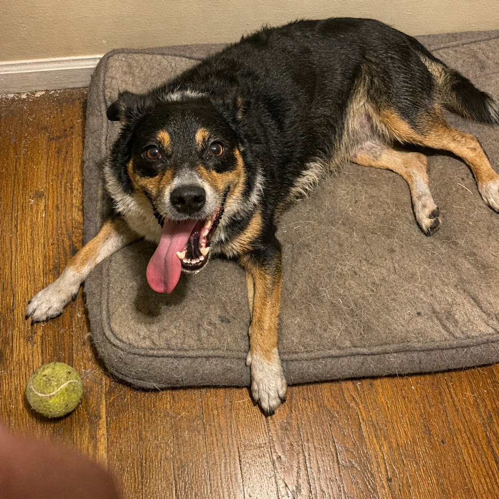
🐶
Still Panting on the Dog Bed
Run generate_cbdog_images.py to create
🎨
GPT-Image-1.5 Prompt
Raw iPhone photo taken to show a friend. A medium-sized dog collapsed on a worn dog bed, tongue hanging out, panting hard, eyes still alert. Shot from standing looking straight down. Single harsh overhead light making yellow cast and hard shadows. The dog bed is pushed against a beige wall, has visible dog hair embedded in the fabric. Floor is scratched hardwood with dust in the corners. A slobbery tennis ball sits on the floor near the bed. The dog looks exhausted but the eyes are wide and watchful, not relaxed. This is NOT a content photo - this is 'look at this, she JUST got back from a walk' energy. Thumb shadow visible on edge from holding phone one-handed. Bad angles, casual grip.
learn.greenvalleynutrition.com
A tired dog is not a calm dog
The dog was exhausted. The anxiety was untouched.
👍 ❤️ 3.1K
Ad 2
G
GVN
✓
Sponsored
...
More walks won't fix this.
I know. You were about to add another mile. Push a little harder. Wake up earlier to fit in one more lap around the block.
You've already done this math a hundred times.
If the first walk didn't work, maybe it wasn't long enough.
If two walks didn't work, maybe they weren't close enough together.
If an hour didn't do it, maybe ninety minutes would.
You've been mopping.
Water pools on your kitchen floor. You mop. An hour later, wet again.
So you mop faster. More often. You buy a better mop.
Your arms hurt. You're exhausted from mopping.
And the floor is still wet.
Because there's a leak in the pipes.
You could mop for the rest of your life and never fix it.
Exercise is the mop.
Your dog's nervous system is the leak.
You've been working harder at the wrong solution.
That's why five miles feels like nothing. That's why your arm gives out before the anxiety does.
The effort was never the problem.
The tool was.
One approach exhausts you both.
The other asks what's actually causing the problem.
You can mop forever and lose.
Or you can fix the leak once.
5 reasons exercise won't fix your dog's anxiety: {url}
See more
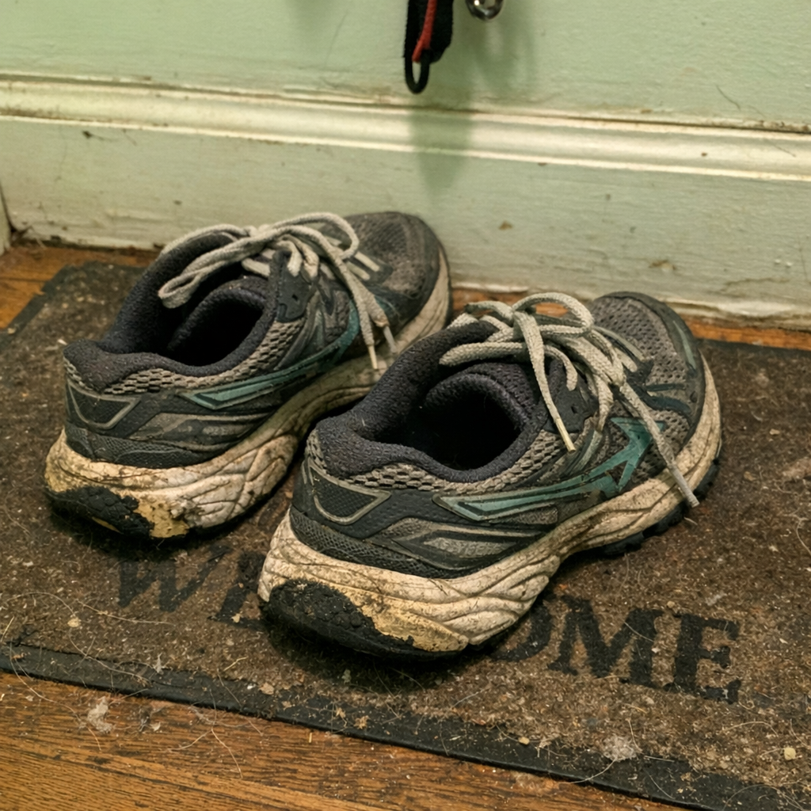
👟
The Worn-Out Sneakers
Run generate_cbdog_images.py to create
🎨
GPT-Image-1.5 Prompt
Raw iPhone photo taken to show a friend. A pair of running shoes next to front door, soles visibly worn down at the heels, laces dirty and frayed. Shot from inside entryway looking down at the floor. Single fluorescent ceiling light making everything slightly green. Dirty welcome mat underneath, scuffed baseboards, a dog leash hanging on a hook above. The shoes are kicked off at an angle, not arranged. Some dog hair visible on the mat. The sole wear pattern shows thousands of miles. This is NOT a content photo - this is 'look how destroyed these are from walking her' energy. Autofocus slightly soft on background, sharp on shoes.
learn.greenvalleynutrition.com
5 reasons exercise won't fix your dog's anxiety
You could mop forever and lose. Or fix the leak once.
👍 ❤️ 2.8K
Ad 3
G
GVN
✓
Sponsored
...
You're making your dog's anxiety worse with every extra walk.
That's not an insult. That's the research.
Every extra mile floods their system with cortisol.
The stress hormone. The one that tells every cell to stay on high alert.
Researchers measured it after two-hour walks. It hadn't dropped.
Physical exhaustion doesn't reset the alarm. It buries it under fatigue.
The collapse on the dog bed looks like calm.
But the nervous system is still screaming. Just too tired to move.
An hour later, the pacing starts again.
The whining at the door. The same loop, on repeat.
Here's what nobody tells you:
Physical fatigue and nervous system regulation are completely different tracks.
You can drain one without touching the other.
One burns energy.
One regulates fear.
They're not connected.
Running them harder doesn't fix them.
It just makes you both more tired.
The help you've been giving was never designed for what's actually wrong.
It was designed for excess energy. For the hyper dog that just needs to run it off.
Your dog isn't hyper. They're panicking.
And you can't outrun a chemical imbalance.
You didn't fail them.
You followed advice that was never meant for this.
5 reasons exercise won't fix your dog's anxiety: {url}
See more
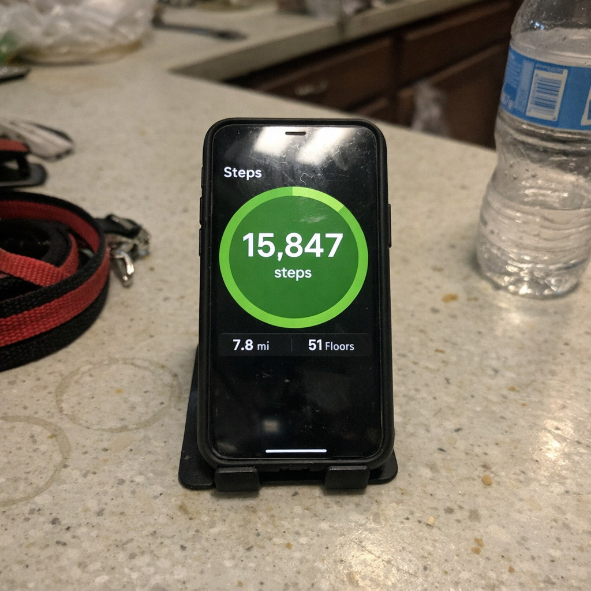
📱
The Mile Tracker
Run generate_cbdog_images.py to create
🎨
GPT-Image-1.5 Prompt
Raw iPhone photo taken to show a friend. A smartphone propped on a kitchen counter, screen showing 15,847 steps on a fitness app. Shot from standing looking down at the counter. Overhead fluorescent making yellow-green cast. Counter has water rings, crumbs, a dog leash coiled nearby, half-empty water bottle. The phone screen is slightly overexposed from overhead light reflection. Background shows corner of kitchen with messy items. This is NOT a content photo - this is 'look at this insane step count' energy. Slight motion blur on background from hand movement.
learn.greenvalleynutrition.com
Your morning walk is training your dog to be MORE anxious
Every extra mile floods their system with cortisol.
👍 ❤️ 4.2K
Ad 4
G
GVN
✓
Sponsored
...
The more you exercise an anxious dog, the more anxious they become.
That sounds impossible. That sounds like the opposite of everything you've been told.
But think about what you've actually seen.
You walk them until your legs ache.
They collapse for an hour.
Then the pacing starts again. The panting. The whining when you reach for your keys.
The anxiety didn't go anywhere. It just waited for the exhaustion to wear off.
Here's why this happens:
You're mopping the floor while the pipes are still leaking.
Every day, more water. Every day, more mopping.
You can mop harder. You can mop more often.
But until you fix the leak, the floor stays wet.
Exercise drains physical energy.
It doesn't touch the alarm system that's stuck in panic mode.
One runs out of fuel.
The other keeps firing no matter how tired the body gets.
They're two separate systems.
And treating them like they're connected is why the walks keep failing.
The more you chase the problem with the wrong tool, the more exhausted you both get.
While the real problem goes untouched.
Your effort was never the issue.
The approach was.
5 reasons exercise won't fix your dog's anxiety: {url}
See more
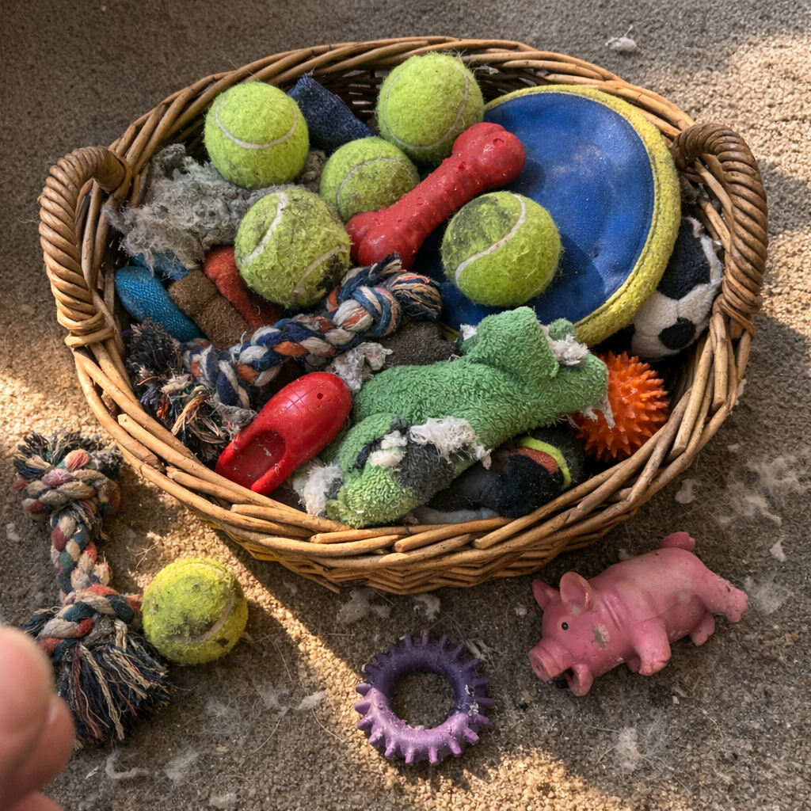
🎾
The Pile of Fetch Toys
Run generate_cbdog_images.py to create
🎨
GPT-Image-1.5 Prompt
Raw iPhone photo taken to show a friend. A basket overflowing with dog toys - tennis balls (some new, some chewed), frisbees, rope toys, squeaky toys. At least 8-10 toys visible. Shot from above looking into the basket. Basket on worn carpet with visible dog hair and dust bunnies. Some toys have fallen out onto the floor. Late afternoon window light creating warm patch but also harsh shadows. The toys show varying levels of wear - some shredded, some barely used. This is NOT a content photo - this is 'we've tried EVERYTHING' energy. Thumb partially visible at edge of frame.
learn.greenvalleynutrition.com
Exercise is making your dog's anxiety worse
You've been running a race that has no finish line.
👍 ❤️ 3.5K
Ad 5
G
GVN
✓
Sponsored
...
"A tired dog is a calm dog" is the biggest lie in pet ownership.
I know. That's the advice everyone gives.
The trainer said it. The vet said it. Every dog person you've ever met has repeated it like gospel.
But here's what they didn't tell you:
That advice came from the 1970s.
Before we knew dogs had stress hormones. Before brain scans showed anxiety patterns. Before anyone understood the difference between hyper and terrified.
The first canine cortisol studies came two decades later.
Brain imaging for dogs? That's 2010s research.
"Tired dog, calm dog" came from the same era as shock collars and dominance theory.
Trainers back then thought exhaustion was discipline.
They had no way to measure what was happening inside a panicking dog's brain.
And yet their guess became the advice you still hear today.
One approach exhausts the body and hopes the mind follows.
The other asks whether the nervous system can calm down at all.
One measures how tired they are.
The other measures whether the alarm ever turned off.
They're solving completely different problems.
The advice wasn't wrong for its time.
It was made for a different problem. Excess energy, not chemical panic.
You weren't wrong to follow it.
You were just handed the wrong tool.
5 reasons exercise won't fix your dog's anxiety: {url}
See more
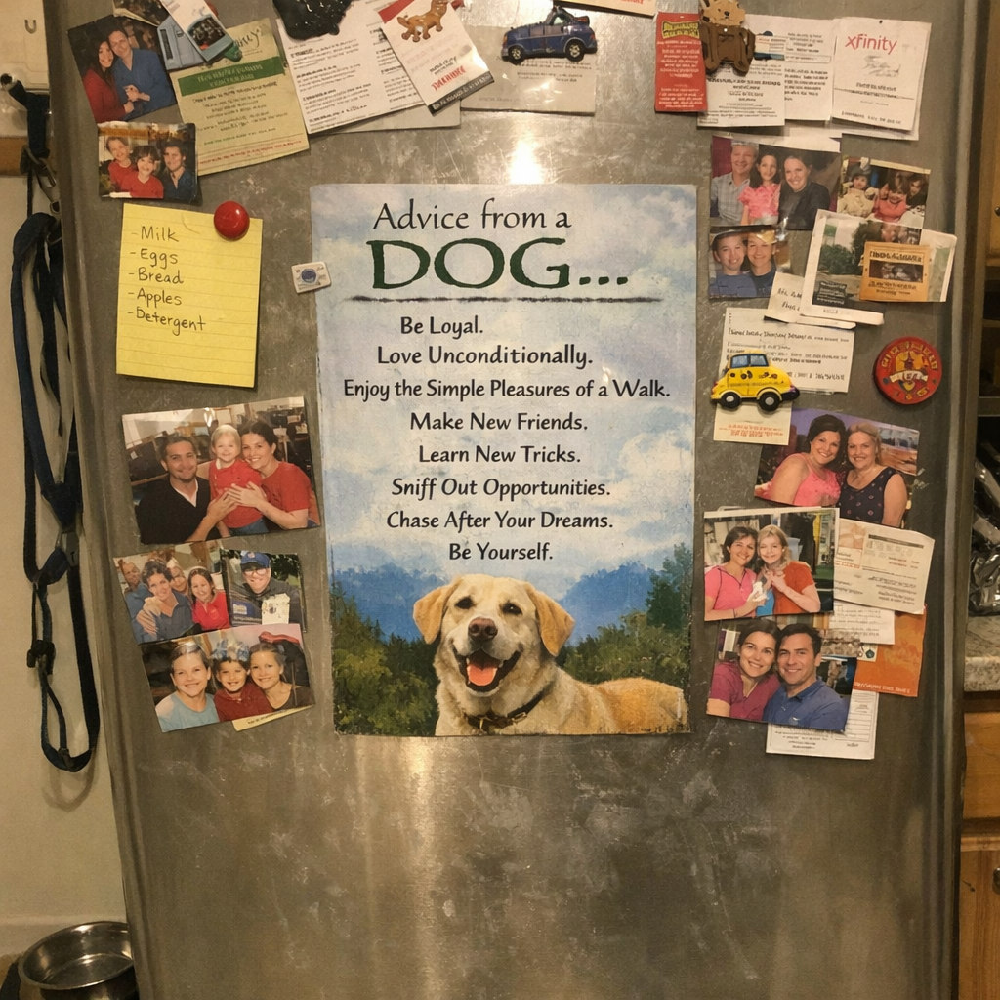
🧲
The Quote on the Fridge
Run generate_cbdog_images.py to create
🎨
GPT-Image-1.5 Prompt
Raw iPhone photo taken to show a friend. A refrigerator door covered with magnets, photos, grocery list. A dog-themed magnet or printout visible among the clutter with text about dogs. Shot straight-on from kitchen. Fluorescent overhead light making everything slightly yellow. Dog bowl visible on floor at bottom of frame. A leash hangs on a hook nearby. The fridge surface has fingerprints and smudges. Real family photos, takeout menus, appointment reminders visible but not readable. This is NOT a content photo - this is 'look at this advice I've been following' energy. Some glare on fridge surface from light.
learn.greenvalleynutrition.com
A tired dog is not a calm dog
Your dog collapses after the walk. An hour later, the pacing starts again.
👍 ❤️ 5.3K
Ad 6
G
GVN
✓
Sponsored
...
The advice you keep hearing was made before we knew anything about dog anxiety.
The vets say it. The trainers say it. Every dog person repeats it like it's law.
"Tire them out."
But here's what they forgot to mention:
The first studies on canine cortisol came in the 1990s.
Brain scans showing anxiety patterns in dogs? That's 2010s research.
The understanding that anxiety involves neurochemistry came decades after the advice became popular.
"A tired dog is a calm dog" came from an era that didn't know the difference between hyper and terrified.
Same era as shock collars. Same era as dominance theory.
Trainers in the 1970s thought behavior problems meant your dog was being defiant.
They thought exhaustion was discipline.
They had no way to measure what was happening inside a panicking brain.
Their guess became the standard.
And the standard stayed the same even after the science didn't.
One approach drains the body and hopes the brain follows.
The other asks what's actually happening inside the nervous system.
One measures tiredness.
The other measures whether the alarm ever turned off.
The advice wasn't wrong for its time.
It just came from a time that didn't know what you're actually dealing with.
You weren't failing.
You were following a map drawn before anyone discovered the territory.
5 reasons exercise won't fix your dog's anxiety: {url}
See more
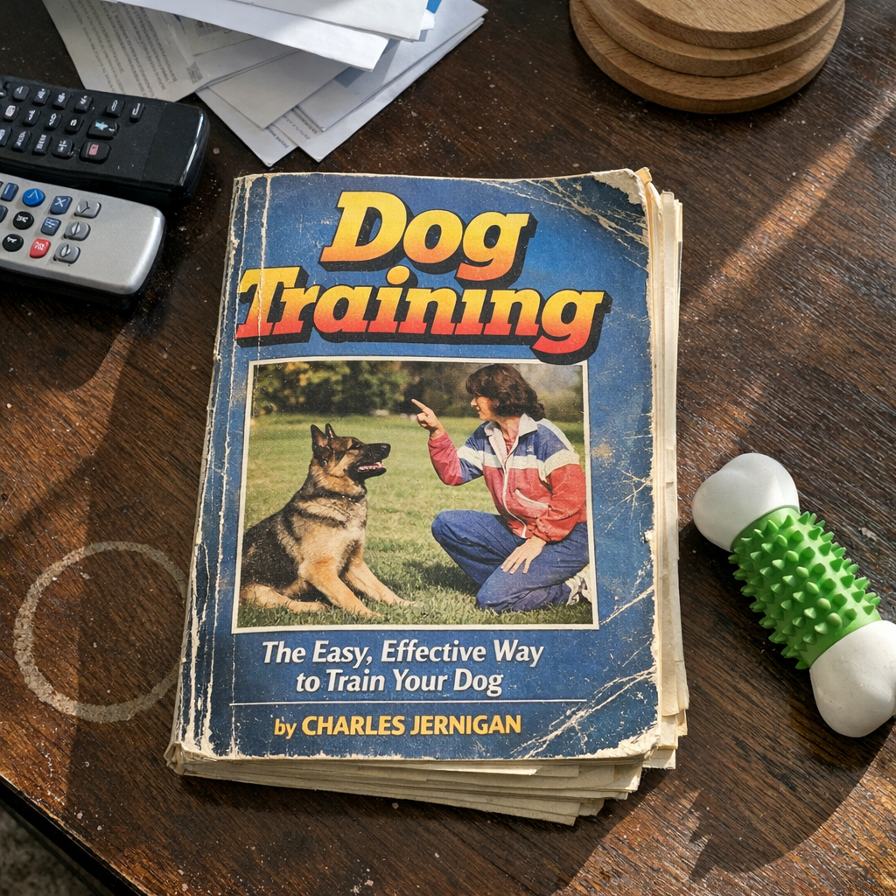
📚
The Old Dog Book
Run generate_cbdog_images.py to create
🎨
GPT-Image-1.5 Prompt
Raw iPhone photo taken to show a friend. An old dog training book on a cluttered coffee table, clearly from the 80s or 90s - worn cover, dog-eared pages, cracked spine, dated font and imagery. Shot from above looking down. Natural light from window creating harsh shadows across the table. Coffee mug ring stain on table surface. A modern dog toy or treat visible nearby for contrast. Other items on table - remotes, coasters, mail. This is NOT a content photo - this is 'this is literally what people still recommend' energy. Book is slightly tilted, casual placement.
learn.greenvalleynutrition.com
A tired dog is not a calm dog
"Tired dog, calm dog" was born in the same era as shock collars.
👍 ❤️ 4.1K
Ad 7
G
GVN
✓
Sponsored
...
You thought if you walked far enough, the anxiety would stop. It doesn't work that way.
Three miles wasn't enough. So you tried four.
Four didn't work. So you added another lap.
You kept pushing the distance because somewhere in your head, there was a threshold. A number of miles that would finally drain the panic.
There isn't one.
Researchers measured cortisol after two-hour walks.
It hadn't dropped.
The stress hormone. The one that tells every cell to stay on high alert. Still elevated. After hours of exercise.
The dog was exhausted.
The anxiety was untouched.
Here's why the threshold doesn't exist:
Physical fatigue and nervous system regulation are completely separate systems.
One burns energy.
One regulates fear.
You can drain the first one to zero.
The second one doesn't care how many miles you logged.
It's like trying to fix insomnia by running longer.
You'll be more tired.
You'll still be awake.
Because tiredness and the ability to sleep are different things.
The walks were never going to hit the number.
There is no number.
You've been solving for the wrong equation.
The trade-off you thought you were making doesn't exist.
5 reasons exercise won't fix your dog's anxiety: {url}
See more
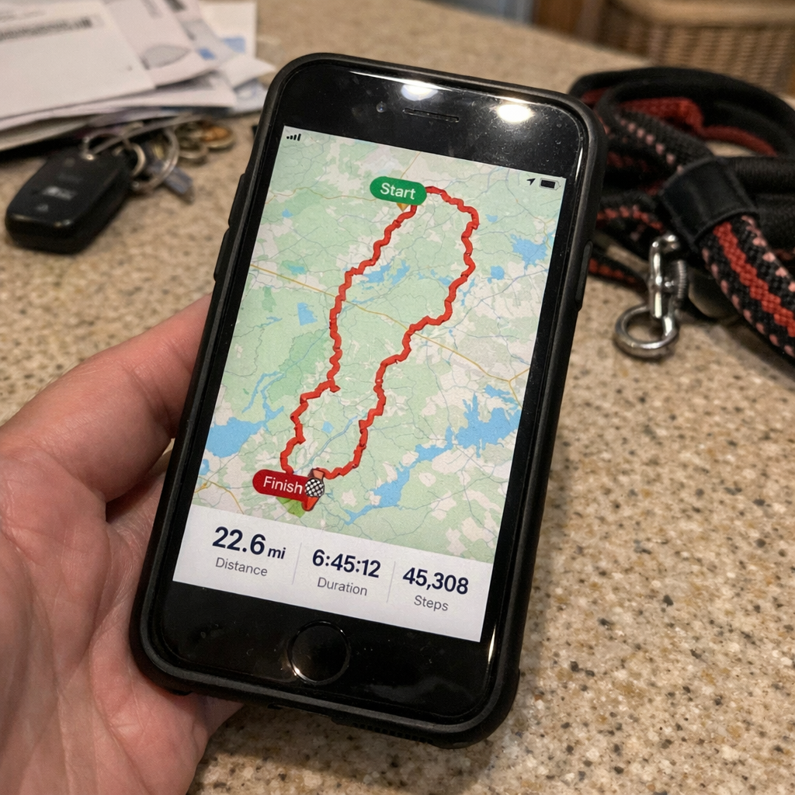
🗺
The Trail App Map
Run generate_cbdog_images.py to create
🎨
GPT-Image-1.5 Prompt
Raw iPhone photo taken to show a friend. A smartphone lying flat on a kitchen counter, screen showing a walking/hiking app with a long completed route visible - many miles logged. Shot from above looking down at the counter. Overhead kitchen light creating reflection on screen edge. Counter has everyday clutter - mail, keys, a dog leash. The route on the screen is clearly long and looping. Kitchen in background is lived-in, not staged. This is NOT a content photo - this is 'look how far I walked today' energy. Screen slightly tilted, one-handed capture.
learn.greenvalleynutrition.com
A tired dog is not a calm dog
Five miles wasn't enough. Neither was six. Neither was seven.
👍 ❤️ 3.9K
Ad 8
G
GVN
✓
Sponsored
...
There's no amount of fetch that fixes a nervous system stuck in alarm mode.
You can throw until your arm gives out.
You can chase the ball until you're both panting in the grass.
You can play until the sun goes down and your dog collapses on the floor.
And the pacing will start again in an hour.
Because the alarm never turned off.
Think about what's actually happening inside your dog.
It's like a smoke alarm that won't stop screaming.
The toast is gone. The smoke cleared hours ago. But the alarm keeps blaring.
You can wave towels. Open windows. Stand there exhausted at 2am.
Nothing is wrong with the alarm.
Something is wrong with the reset mechanism.
Your dog's nervous system isn't broken. It's starving.
Every mammal has a built-in system for calming down after a threat passes.
In your dog, that system is running on empty.
No amount of fetch can fill the tank.
You've been trying to tire out the alarm.
But alarms don't run on energy.
They run on the signal that tells them when to stop.
And that signal isn't coming from the tennis ball.
5 reasons exercise won't fix your dog's anxiety: {url}
See more
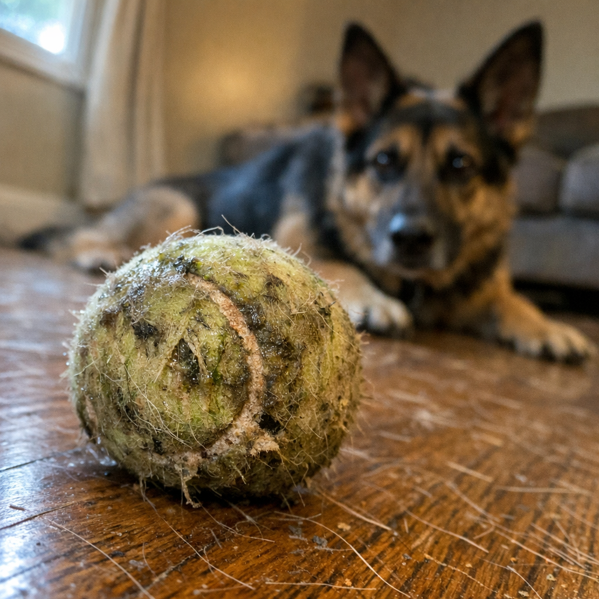
🎾
The Ignored Ball
Run generate_cbdog_images.py to create
🎨
GPT-Image-1.5 Prompt
Raw iPhone photo taken to show a friend. A slobbery, dirt-covered tennis ball in foreground on hardwood floor, in sharp focus. In the background, slightly out of focus, a dog lying down but with alert body language - ears up, eyes wide and watchful, body tense not relaxed. Shot from low angle near floor level. Late afternoon light from window. Floor has scratches and some dog hair. The ball has teeth marks and grass stains. This is NOT a content photo - this is 'we just played fetch for 45 minutes and look at her' energy. Slight dutch angle from holding phone low.
learn.greenvalleynutrition.com
A tired dog is not a calm dog
You can throw until your arm gives out. The anxiety won't.
👍 ❤️ 4.7K
Ad 9
G
GVN
✓
Sponsored
...
You've already proven exercise doesn't work. How many miles did it take?
You don't have to calculate it exactly.
Just think about all the mornings. The evenings. The weekends spent walking loops around the neighborhood.
Think about the hikes that were supposed to finally drain the energy.
Think about the fetch sessions that left your shoulder sore for days.
You've run the experiment a hundred times.
Same input. Same result.
Exhausted dog. Still anxious.
Here's what that actually means:
You already have the data.
You've been mopping the floor while the pipes leak.
Every day, more water. Every day, more mopping.
The mop isn't broken.
The mop was never meant to fix leaks.
Exercise isn't broken either.
It just wasn't meant for this.
It drains physical energy.
It doesn't touch the alarm system that's stuck in panic mode.
You've been working harder and harder at the wrong solution.
That's why the distance keeps climbing but the results stay the same.
Your effort was never the problem.
The tool was.
You can keep mopping.
Or you can look at what's actually causing the water.
5 reasons exercise won't fix your dog's anxiety: {url}
See more
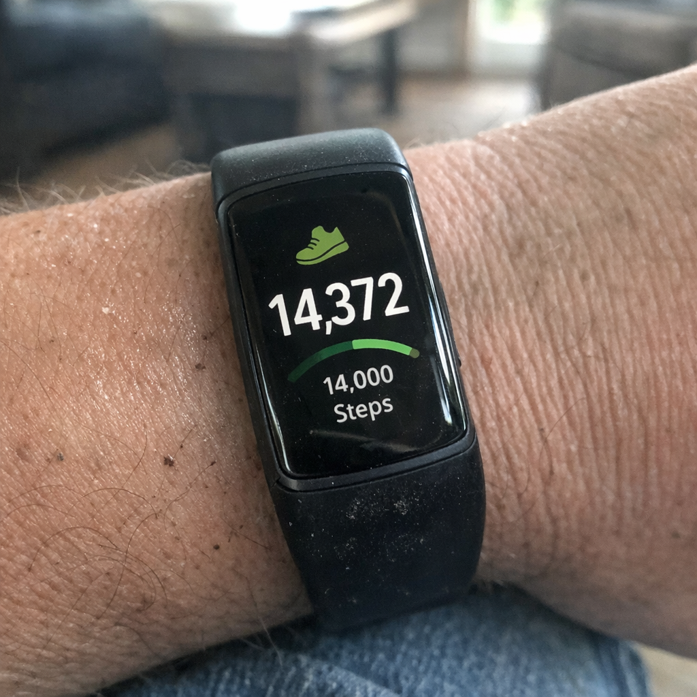
⌚
The Step Counter Watch
Run generate_cbdog_images.py to create
🎨
GPT-Image-1.5 Prompt
Raw iPhone photo taken to show a friend. Close-up of a wrist wearing a fitness watch/tracker, screen showing high step count around 12,000-15,000. The wrist looks slightly sweaty, maybe some dirt. Hand is resting on knee or thigh. Background is blurred living room or porch. Natural light. The watch face is in sharp focus. This is NOT a content photo - this is 'look at this number from today alone' energy. Shot quickly, slightly off-center framing.
learn.greenvalleynutrition.com
5 reasons exercise won't fix your dog's anxiety
You don't need more data. You've run this experiment a hundred times.
👍 ❤️ 3.2K
Ad 10
G
GVN
✓
Sponsored
...
Your arm gave out from throwing the ball. The anxiety didn't.
That's the data point that matters.
You threw until your shoulder ached. Until you had to switch hands. Until you couldn't lift your arm the next morning.
And an hour after you stopped, the pacing started again.
The whining. The panting. The same spiral that started before the fetch session began.
You already ran the experiment.
You ran it yesterday. And the day before. And the day before that.
Every time, the same result.
Your body gave out first.
The anxiety didn't budge.
Here's what that tells you:
You're mopping the floor while the pipes leak.
You can mop faster. More often. With a better mop.
But until you fix the leak, the floor stays wet.
Exercise drains physical energy.
It doesn't touch the nervous system that's stuck in alarm mode.
One runs out of fuel.
The other keeps firing no matter how tired the body gets.
They're two separate systems.
And you've been exhausting yourself trying to connect them.
Your effort was never the issue.
The tool was.
You already have proof it doesn't work.
You've had it for months.
5 reasons exercise won't fix your dog's anxiety: {url}
See more
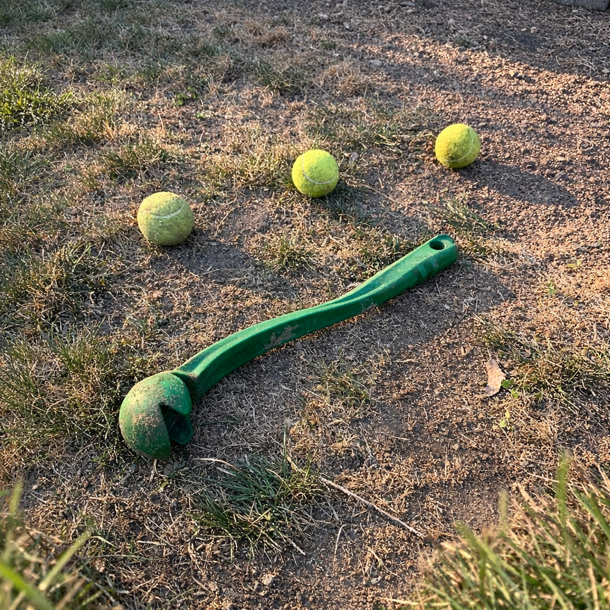
🎾
The Ball Chucker on the Ground
Run generate_cbdog_images.py to create
🎨
GPT-Image-1.5 Prompt
Raw iPhone photo taken to show a friend. A ball launcher/chucker lying abandoned on patchy grass, with 3-4 tennis balls scattered nearby. Shot from standing looking down. Late afternoon sun creating long shadows. Grass has brown patches and bare spots. The chucker has grass stains and wear marks. Backyard fence visible in background. This is NOT a content photo - this is 'I literally couldn't throw anymore' energy. Casual framing, some grass in soft focus at frame edges.
learn.greenvalleynutrition.com
5 reasons exercise won't fix your dog's anxiety
Your arm quit before the anxiety did.
👍 ❤️ 5.6K
Ad 11
G
GVN
✓
Sponsored
...
Your dog doesn't have an energy problem. They have a nervous system problem.
I know. They can't sit still. They pace for hours. They vibrate with tension the moment you leave the room.
It looks like excess energy.
It's not.
It's a stuck alarm.
Think about a smoke detector that won't turn off.
The toast is gone. The smoke cleared hours ago. But the screaming continues.
You can open windows. Wave towels. Stand there exhausted.
Nothing is wrong with the alarm.
Something is wrong with the reset mechanism.
That's your dog.
Their nervous system isn't broken. It's depleted.
Every mammal has a built-in system for calming down after danger passes.
The alarm fires. The threat ends. The system resets.
In your dog, that system is running on empty.
The reset signal never comes.
So the alarm keeps screaming. And your dog keeps pacing.
This is why all the walks and fetch sessions haven't worked.
You've been trying to drain energy that isn't the problem.
The problem is a starving reset mechanism.
You can't exhaust an alarm into silence.
You can only give it what it needs to turn itself off.
One approach chases the symptom.
The other addresses what's actually stuck.
5 reasons exercise won't fix your dog's anxiety: {url}
See more
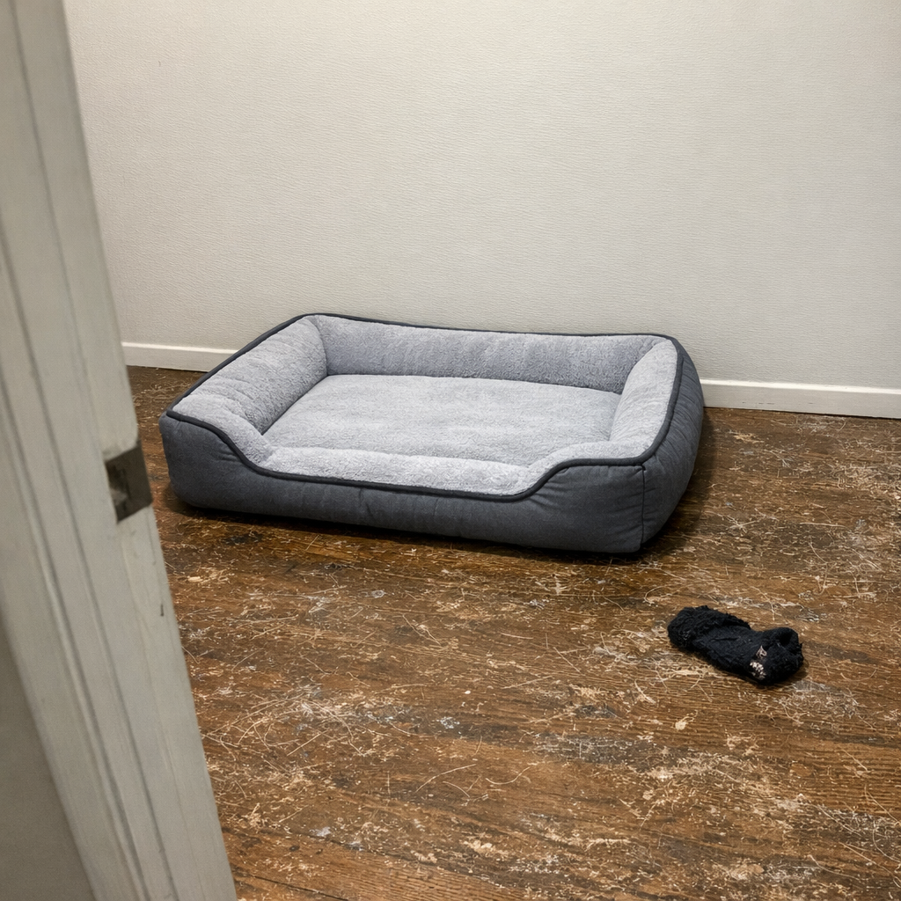
🛌
The Empty Dog Bed
Run generate_cbdog_images.py to create
🎨
GPT-Image-1.5 Prompt
Raw iPhone photo taken to show a friend. A dog bed against a wall that looks pristine and unused - no indentations, no dog hair on it. But the floor AROUND the bed is scratched, has dog hair, maybe a chewed sock nearby. Shot from hallway looking into room. Mixed lighting from overhead and window. The bed looks brand new in contrast to the worn floor around it. This is NOT a content photo - this is 'she has 3 beds and uses none of them' energy. Door frame slightly visible at edge.
learn.greenvalleynutrition.com
Exercise is making your dog's anxiety worse
They can't sit still. They pace for hours. That's not energy. That's panic.
👍 ❤️ 4.4K
Ad 12
G
GVN
✓
Sponsored
...
The dogs who are calm aren't more exercised. They have something in their system yours is missing.
You've watched other dogs at the park.
They sniff around. They play. They lie down in the grass.
No pacing. No whining. No frantic energy.
And you know they didn't just finish a marathon.
Meanwhile, you walk your dog five miles a day. You throw the ball until your arm aches. You structure your entire schedule around exercise.
And they're still pacing when you get home.
Here's what's actually different:
Look at wild dogs.
Wolves rest up to sixteen hours a day.
Coyotes lounge in the sun for hours.
Wild canids don't run marathons to stay calm.
They have something in their biology that resets stress automatically.
The alarm fires. Danger passes. The alarm turns off.
They go back to lying around doing nothing.
Your dog has the same nervous system design.
The same hardware.
But the reset mechanism is starving.
It's not about miles walked.
It's about what's in the tank.
The calm dogs you see aren't working harder than you.
They just have what they need to reset.
Your dog is running the same system on empty.
5 reasons exercise won't fix your dog's anxiety: {url}
See more
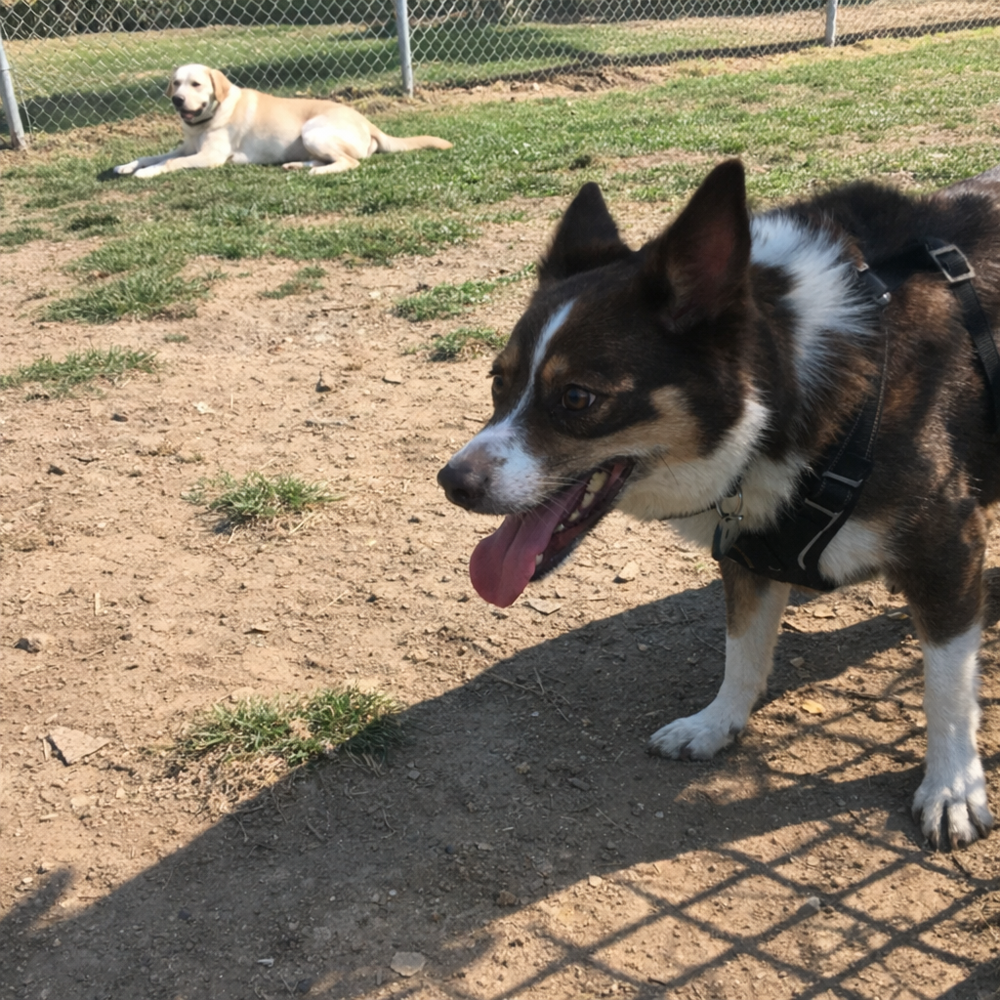
🐕
Two Dogs at the Park
Run generate_cbdog_images.py to create
🎨
GPT-Image-1.5 Prompt
Raw iPhone photo taken to show a friend. Dog park scene with two dogs visible - one in background lying relaxed in the grass, totally calm. One in foreground showing anxious body language - panting hard, ears alert, body tense. Shot at dog park. Chain link fence visible. Harsh afternoon sunlight creating strong shadows. Ground has bare patches where dogs have worn down the grass. This is NOT a content photo - this is 'same park same walk, look at the difference' energy. Shot quickly, slightly off-kilter framing.
learn.greenvalleynutrition.com
Exercise is making your dog's anxiety worse
Some dogs just have what yours is running low on.
👍 ❤️ 3.8K
Ad 13
G
GVN
✓
Sponsored
...
You didn't fail your dog. You followed advice that was never designed for what's actually wrong.
The guilt hits hardest at night.
After another long walk. After another collapsed nap. After another hour of pacing that made it all feel pointless.
You start wondering what you're doing wrong.
Why doesn't it work for your dog like it works for everyone else's?
Here's the answer:
You weren't doing anything wrong.
You were following the only advice anyone ever gave you.
"Tire them out."
But that advice came from the 1970s.
Before anyone knew dogs had stress hormones. Before brain scans showed anxiety patterns. Before the science existed to explain what you're actually dealing with.
The first cortisol studies came two decades later.
The understanding that anxiety is neurochemistry - not just bad behavior - is relatively recent.
"Tired dog, calm dog" came from the same era as shock collars.
Trainers back then thought exhaustion was discipline.
And their guess became the gospel everyone still repeats.
The advice wasn't wrong for its time.
It was made for a different problem.
Excess energy, not chemical panic.
You weren't failing.
You were mopping while the pipes leaked.
And nobody told you about the pipes.
5 reasons exercise won't fix your dog's anxiety: {url}
See more
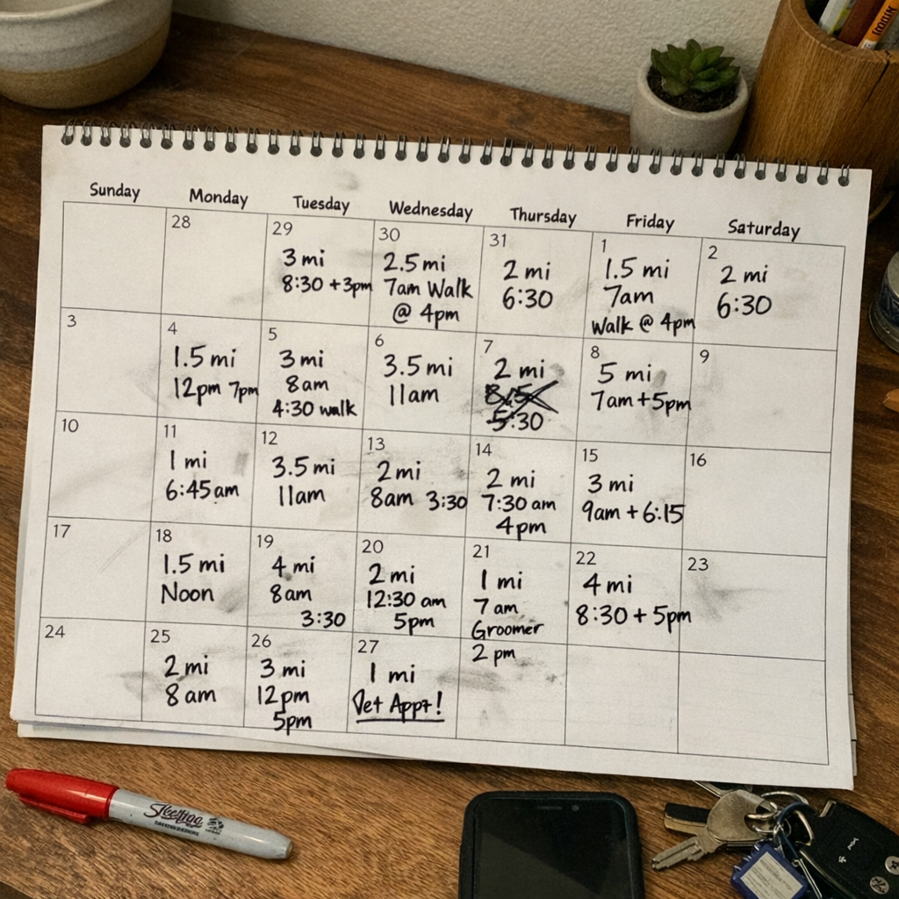
📅
The Calendar of Walks
Run generate_cbdog_images.py to create
🎨
GPT-Image-1.5 Prompt
Raw iPhone photo taken to show a friend. A wall calendar or desk planner with handwritten notes about walk times, miles, or schedules visible. Shot from standing looking at wall or desk. Kitchen or home office context. Messy handwriting, some smudges, maybe something crossed out. Other home items visible in frame. Natural light from window. This is NOT a content photo - this is 'I literally schedule my whole life around her walks' energy. Calendar slightly at angle, not straight-on product shot.
learn.greenvalleynutrition.com
A tired dog is not a calm dog
The guilt hits hardest at night. It shouldn't.
👍 ❤️ 6.2K
Ad 14
G
GVN
✓
Sponsored
...
You're not lazy. You're exhausted from trying the wrong thing.
You've walked more miles than most dog owners ever will.
You've thrown the ball until your shoulder screamed for you to stop.
You've rearranged your entire schedule around exercise.
And it still hasn't worked.
So you start wondering if the problem is you. Not trying hard enough. Not doing it right. Not a good enough owner.
Stop.
The exhaustion isn't proof you're failing.
It's proof you're using the wrong tool.
You've been mopping while the pipes leak.
The harder you mop, the more exhausted you get.
But the floor stays wet.
Because mopping doesn't fix leaks.
Exercise drains physical energy.
It doesn't touch the nervous system stuck in alarm mode.
You can walk until you can't walk anymore.
You can throw until your arm gives out.
The anxiety doesn't care.
It runs on a different track.
Your effort was never the problem.
The approach was.
The exhaustion you feel is data.
And the data says this isn't working.
5 reasons exercise won't fix your dog's anxiety: {url}
See more
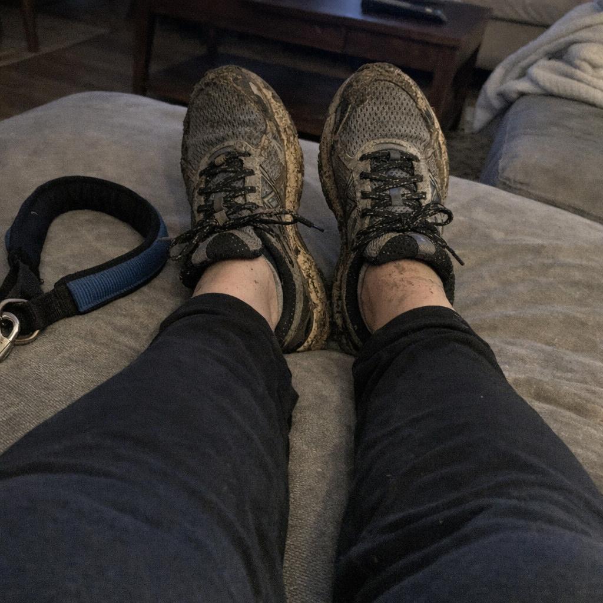
🛋
The Couch After the Walk
Run generate_cbdog_images.py to create
🎨
GPT-Image-1.5 Prompt
Raw iPhone photo taken to show a friend. POV shot looking down at own legs stretched out on a couch, still wearing dirty running shoes. A dog leash is visible on the couch cushion nearby. Shot from person's perspective as if they just collapsed. Living room lighting, maybe TV glow visible. The shoes are dirty from the walk. This is NOT a content photo - this is 'just got home can't move' energy. One-handed shot, slightly tilted perspective.
learn.greenvalleynutrition.com
A tired dog is not a calm dog
You've walked more miles than most owners ever will.
👍 ❤️ 5.1K
Ad 15
G
GVN
✓
Sponsored
...
Your dog's alarm system isn't broken. It's starving.
You've probably wondered if something is just wrong with your dog.
Why can't they calm down? Why does nothing work? Why are they like this when other dogs seem fine?
Here's what you need to know:
The machinery works.
It's the fuel that's missing.
Think about a smoke alarm in your house.
Toast burns. Alarm screams. You wave a towel at it. Eventually, it stops.
The system worked. Threat detected. Alarm sounded. Threat passed. Alarm reset.
Now imagine the alarm never stops.
The toast is gone. The smoke cleared hours ago. But the screaming continues.
Nothing is wrong with the alarm itself.
Something is wrong with the reset mechanism.
Every mammal has a built-in system for calming down after stress.
The alarm fires. The danger ends. The body sends a signal to stand down.
In your dog, that signal isn't coming.
The reset mechanism is depleted. Running on empty. Starving for what it needs to function.
The alarm keeps screaming because it never got the memo that the threat is gone.
Your dog isn't anxious because something is broken.
They're anxious because something is missing.
5 reasons exercise won't fix your dog's anxiety: {url}
See more
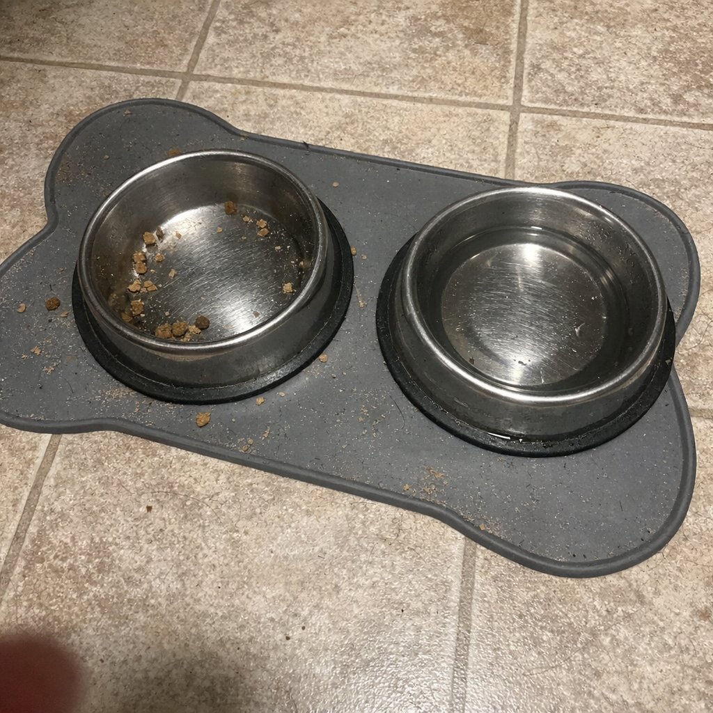
🥤
The Empty Food Bowl
Run generate_cbdog_images.py to create
🎨
GPT-Image-1.5 Prompt
Raw iPhone photo taken to show a friend. Two dog bowls on a mat on kitchen floor - food bowl empty with some kibble crumbs scattered around, water bowl also nearly empty. Shot from above or low angle. Kitchen floor visible with crumbs and some dog hair. The feeding mat is slightly askew. Harsh overhead fluorescent light. This is NOT a content photo - this is 'she just ate and she's still not settled' energy. Thumb shadow at edge from one-handed shot.
learn.greenvalleynutrition.com
Exercise is making your dog's anxiety worse
The alarm isn't broken. The tank is empty.
👍 ❤️ 4.9K
Ad 16
G
GVN
✓
Sponsored
...
There's nothing wrong with your dog. There's something missing.
You've probably stared at them pacing across the floor and wondered if they're just broken somehow.
Other dogs seem fine. Other dogs lie down. Other dogs don't lose their minds when the mailman walks by.
What's wrong with yours?
Nothing.
The hardware works exactly as designed.
There's just nothing in the tank.
Think about what happens inside your dog during stress.
The alarm fires. Danger detected. Adrenaline floods the system. Every cell goes on high alert.
That's working correctly.
The problem is what happens next.
In a healthy system, the danger passes and the body sends a signal to stand down. The alarm resets. The dog goes back to baseline.
In your dog, the reset signal never comes.
The mechanism that's supposed to turn off the alarm is starving.
Not broken. Depleted.
Every mammal has this system. Wild dogs have it. Wolves have it. The calm dog at the park has it.
Your dog has the same machinery.
Just no fuel.
The pacing isn't a personality flaw.
The whining isn't bad behavior.
It's a reset mechanism running on empty.
And you can't exercise it full.
5 reasons exercise won't fix your dog's anxiety: {url}
See more
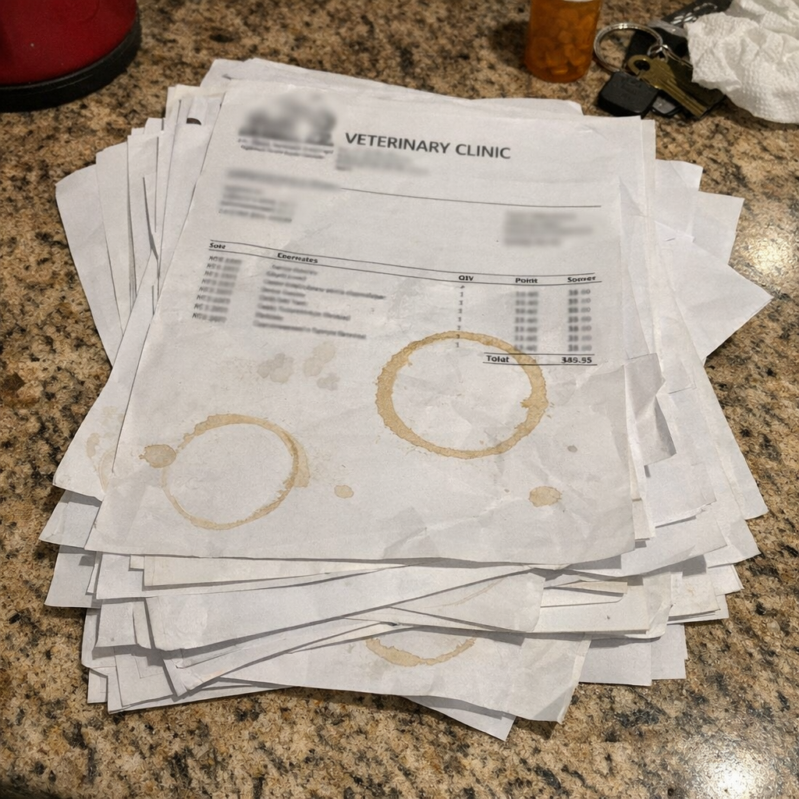
📄
The Vet Paperwork
Run generate_cbdog_images.py to create
🎨
GPT-Image-1.5 Prompt
Raw iPhone photo taken to show a friend. A stack of paperwork on a kitchen counter - clearly vet visit receipts and records, some with coffee ring stains. Shot from above. Vet clinic letterhead visible but details blurred. Kitchen counter shows everyday clutter. Overhead lighting making harsh shadows. The stack suggests multiple visits. This is NOT a content photo - this is '4 visits and they say nothing is wrong' energy. Papers slightly scattered, not neat pile.
learn.greenvalleynutrition.com
Exercise is making your dog's anxiety worse
They're not defective. They're depleted.
👍 ❤️ 5.8K
Ad 17
G
GVN
✓
Sponsored
...
You knew the walks weren't enough. You were right.
Somewhere in the back of your head, you've had this thought before.
After the fifth mile that didn't help. After the hour of fetch that led to more pacing. After the pattern repeated so many times you lost count.
Something isn't working.
And everyone told you to keep trying. Walk farther. Throw more. Try harder.
But you knew.
Here's what the research shows:
Researchers measured cortisol after two-hour walks.
It hadn't dropped.
The stress hormone. The chemical that tells every cell to stay on high alert.
Still elevated. After hours of exercise.
The dog was exhausted.
The anxiety was untouched.
Physical fatigue and nervous system regulation run on completely different tracks.
One burns energy.
One regulates fear.
They're not connected.
You can drain the first one to zero.
The second one doesn't care.
You noticed this before the studies confirmed it.
You saw the pattern in your own dog.
Tired but still wired. Exhausted but still pacing. Collapsed but not calm.
You were right to think something else was going on.
The instinct you've been doubting was correct.
5 reasons exercise won't fix your dog's anxiety: {url}
See more
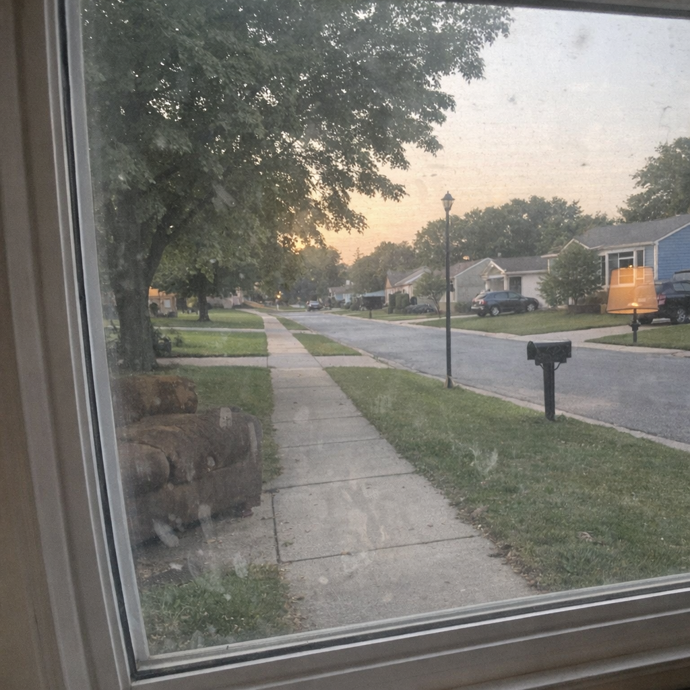
🏠
The Walk Route (Again)
Run generate_cbdog_images.py to create
🎨
GPT-Image-1.5 Prompt
Raw iPhone photo taken to show a friend. View through a house window looking out at a suburban street/sidewalk - the typical neighborhood walking route. Shot from inside, window has some fingerprints/smudges visible. Living room reflected in glass. Morning or evening light on the street outside. The view is familiar, mundane. This is NOT a content photo - this is 'same route same nothing' energy. Window frame visible, not perfectly centered.
learn.greenvalleynutrition.com
A tired dog is not a calm dog
That voice in your head was right all along.
👍 ❤️ 4.3K
Ad 18
G
GVN
✓
Sponsored
...
The exhaustion you feel isn't weakness. It's evidence the approach was wrong.
You've walked more miles this month than most people walk in a year.
Your shoulders ache from fetch. Your schedule revolves around exercise. Your morning alarm is set to the dog's needs, not yours.
And you're tired.
Not just tired. Depleted.
And it still hasn't worked.
So you start wondering if the problem is you. Not trying hard enough. Not doing it right. Not a good enough owner.
Stop.
The exhaustion isn't proof you're failing.
It's proof you're using the wrong tool.
You've been mopping while the pipes leak.
The harder you mop, the more exhausted you get.
But the floor stays wet.
Because mopping doesn't fix leaks.
Exercise drains physical energy.
It doesn't touch the nervous system stuck in alarm mode.
You can walk until you can't walk anymore.
You can throw until your arm gives out.
The anxiety doesn't care.
It runs on a different track.
Your effort was never the problem.
The approach was.
The exhaustion you feel is data.
And the data says this isn't working.
5 reasons exercise won't fix your dog's anxiety: {url}
See more
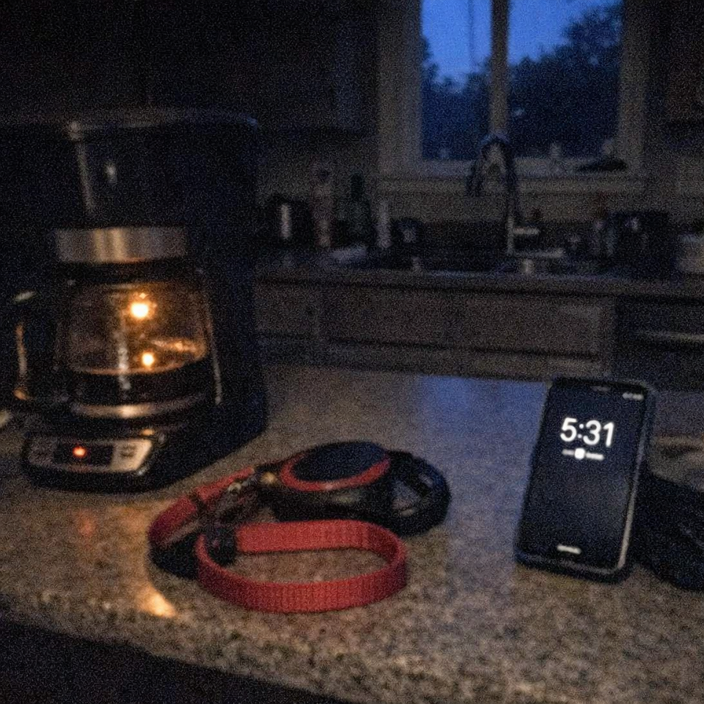
☕
The Kitchen at 6am
Run generate_cbdog_images.py to create
🎨
GPT-Image-1.5 Prompt
Raw iPhone photo taken to show a friend. Kitchen scene before dawn - coffee maker with light on, dim pre-sunrise light through window. A dog leash visible on the counter. Maybe a phone or clock showing early time like 5:30 or 6:00. The kitchen is shadowy but functional. This is NOT a content photo - this is 'another 5:30am walk before work' energy. Low light creating grain, slightly blurry from slow shutter.
learn.greenvalleynutrition.com
A tired dog is not a calm dog
The exhaustion proves you tried. The anxiety proves it was the wrong tool.
👍 ❤️ 4.6K
Ad 19
G
GVN
✓
Sponsored
...
Researchers measured cortisol after a 2-hour walk. It hadn't budged.
The stress hormone. The chemical that screams "danger" to every cell in the body.
Still elevated. After two hours of walking.
The dog was exhausted.
The anxiety was untouched.
This isn't fringe research.
Veterinary behaviorists see it constantly.
Separation anxiety alone affects an estimated 20-40% of dogs.
And what they keep finding is the same pattern:
Physical fatigue and nervous system regulation run on completely different tracks.
You can drain the battery on one without touching the other.
One system burns energy.
One system regulates fear.
One gets tired when you run it.
One doesn't care how many miles you logged.
It's like turning up the radio to drown out engine noise.
The music gets louder.
The engine still knocks.
You haven't fixed anything. You've just made it harder to hear.
Exercise makes your dog too tired to show the anxiety as visibly.
But inside, the alarm is still blaring.
The research wasn't trying to prove exercise is bad.
It was trying to understand why so many well-exercised dogs are still anxious.
Now we know.
5 reasons exercise won't fix your dog's anxiety: {url}
See more
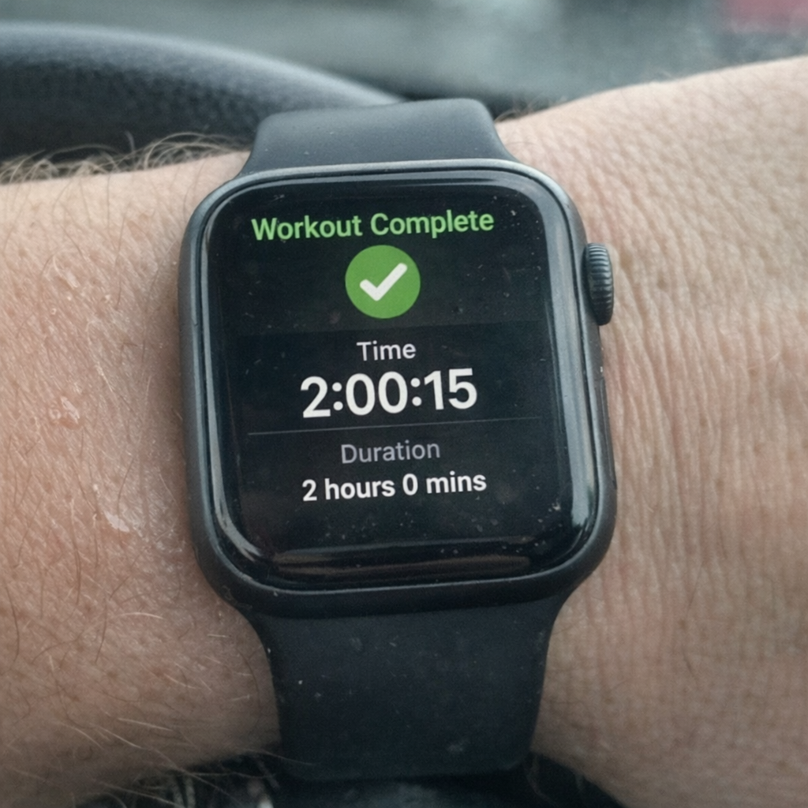
⌚
The Watch After the Walk
Run generate_cbdog_images.py to create
🎨
GPT-Image-1.5 Prompt
Raw iPhone photo taken to show a friend. Close-up of fitness watch on wrist showing workout completed - duration around 2 hours or 120 minutes visible. Wrist looks tired, maybe resting on table or steering wheel. Background blurred. The specific time (2 hours) is clearly visible on screen. This is NOT a content photo - this is 'exactly what the studies measured' energy. Quick snap, focused on watch face.
learn.greenvalleynutrition.com
5 reasons exercise won't fix your dog's anxiety
Two hours of walking. Cortisol hadn't moved.
👍 ❤️ 3.7K
Ad 20
G
GVN
✓
Sponsored
...
Wolves rest 16 hours a day. They don't need exhaustion to stay calm.
If exhaustion created calm, wolves would need to run all day.
They don't.
Wild dogs conserve energy between hunts. Lying around. Dozing. Doing nothing.
Coyotes lounge in the sun for hours at a time.
Studies of wolf behavior confirm it. When food is plentiful, they spend most of their time resting.
They don't need exhaustion to stay calm.
These animals face real threats. Predators. Territory battles. Starvation.
Yet they don't pace in circles when nothing's wrong.
They don't pant for hours after a loud noise.
They don't destroy dens when pack members leave.
Here's the part that changes everything:
Wild canids don't have a word for anxiety.
Because they don't need one.
The alarm fires. Danger passes. The alarm resets.
They go back to lying in the sun.
Meanwhile, your dog lives in a safe home with regular meals and no predators.
And they can't stop pacing after the doorbell rings.
Same species. Same nervous system design.
Different results.
The wild dogs aren't running more.
They have something in their biology that resets stress automatically.
Your dog is running the same system on empty.
5 reasons exercise won't fix your dog's anxiety: {url}
See more
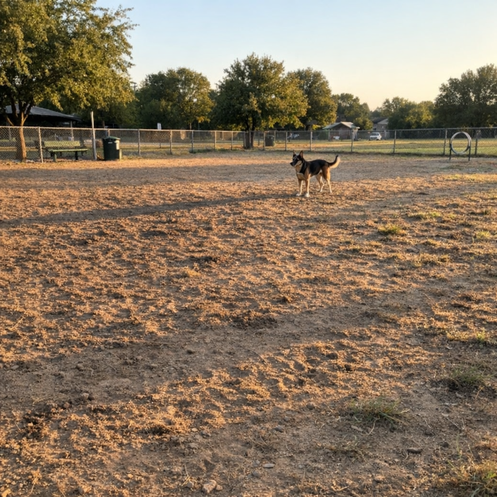
🌴
The Dog Park Aftermath
Run generate_cbdog_images.py to create
🎨
GPT-Image-1.5 Prompt
Raw iPhone photo taken to show a friend. Nearly empty dog park in late afternoon - long shadows, golden hour light. Chain link fence visible. Ground churned up from dogs playing. One dog visible in mid-distance, standing alert - ears up, tail stiff, scanning. The park looks like everyone else has left. This is NOT a content photo - this is 'everyone else left an hour ago and she still won't go' energy. Wide shot showing the emptiness.
learn.greenvalleynutrition.com
5 reasons exercise won't fix your dog's anxiety
If exhaustion created calm, wolves would need to run all day.
👍 ❤️ 4.0K
Ad 21
G
GVN ✓
Sponsored · 🌐
···
A tired dog is not a calm dog.
That sounds like it contradicts everything you've ever heard.
Every trainer. Every vet. Every dog person you've ever met has repeated the same advice.
Tire them out. The energy is the problem. Just exhaust them.
But that advice came from the 1970s.
Before anyone measured stress hormones in dogs. Before brain scans showed what anxiety actually looks like. Before anyone understood the difference between hyperactive and terrified.
The first canine cortisol studies came two decades later.
The understanding that anxiety is neurochemistry came later still.
"Tired dog, calm dog" was born in the same era as shock collars and dominance theory.
Trainers back then thought exhaustion was discipline.
They had no way to know what was actually happening inside a panicking dog's brain.
And their guess became the advice everyone still repeats today.
Here's what tired actually looks like:
Your dog collapses after the walk. An hour later, the pacing starts again. The whining. The same spiral.
Tired.
Not calm.
The collapse wasn't peace. It was exhaustion covering the alarm that never turned off.
The advice wasn't wrong for its time.
It was made for a different problem.
Excess energy, not chemical panic.
5 reasons exercise won't fix your dog's anxiety: learn.greenvalleynutrition.com
See more
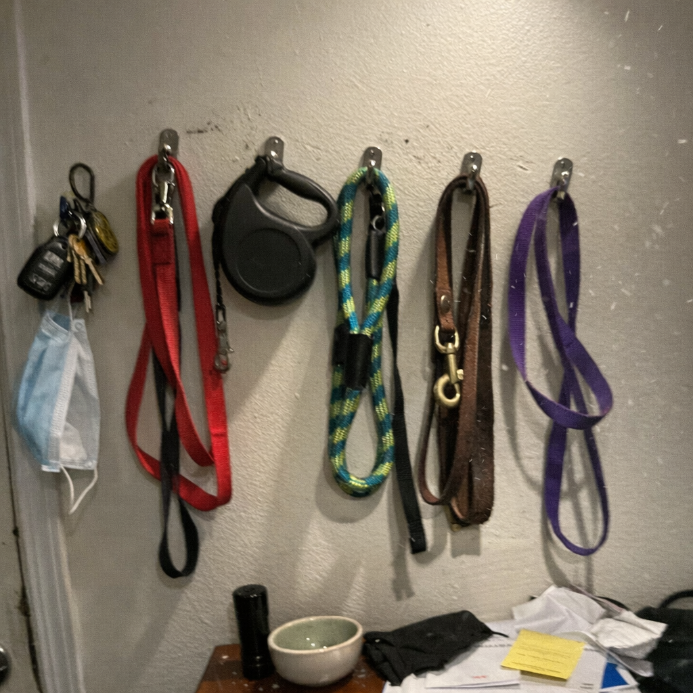
learn.greenvalleynutrition.com
A tired dog is not a calm dog
The collapse wasn't peace. It was exhaustion covering the alarm.
👍❤️
127
Ad 22
G
GVN ✓
Sponsored · 🌐
···
That long walk is feeding the panic, not draining it.
Every mile you add, you think you're draining the tank.
You think if you just walk far enough, the anxiety will finally empty out. The energy will burn off. The panic will have nowhere left to go.
But that's not how it works.
Cortisol doesn't care how tired your dog's legs are.
Researchers measured it after two-hour walks. Still elevated. The stress hormone that screams "danger" to every cell in the body. Still running hot.
The dog was exhausted.
The anxiety was untouched.
Here's what you're actually doing with those extra miles:
You're burying the alarm under fatigue.
The collapse on the dog bed looks like calm. It's not.
The nervous system is still screaming. Just too tired to show it.
An hour later, the pacing starts again. The panting. The same loop, right on schedule.
Physical fatigue and nervous system regulation run on completely different tracks.
One burns energy.
One regulates fear.
They don't talk to each other.
You can drain the first one to zero.
The second one doesn't notice.
Every extra mile isn't medicine. It's a longer delay before the same symptoms return.
The walk isn't fixing it.
It's just pushing the panic underground.
5 reasons exercise won't fix your dog's anxiety: learn.greenvalleynutrition.com
See more
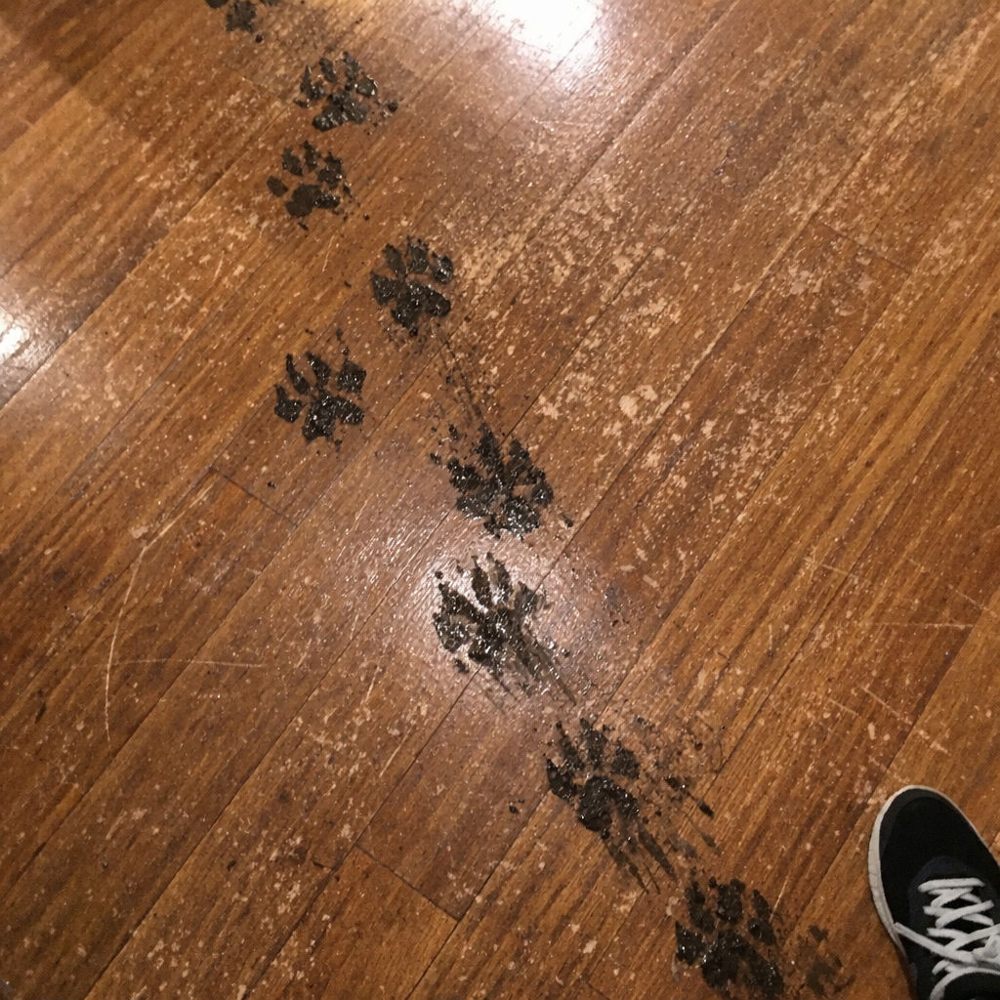
learn.greenvalleynutrition.com
Your morning walk is training your dog to be MORE anxious
Every mile you add, you think you're draining the tank. You're filling it.
👍❤️
89
Ad 23
G
GVN ✓
Sponsored · 🌐
···
Everyone giving you exercise advice has never measured what's happening inside your dog.
The trainer said tire them out.
The vet said more walks.
Every dog forum, every article, every well-meaning friend has repeated the same thing.
They've all told you what to do.
None of them measured what actually happens when you do it.
Researchers finally did.
They measured cortisol after two-hour walks.
It hadn't dropped.
The stress hormone. The chemical that tells every cell to stay on high alert. Still elevated. After hours of exercise.
The dog was physically exhausted.
The nervous system didn't care.
Here's what the advice never accounted for:
Physical fatigue and nervous system regulation are completely separate systems.
The advice assumed they were connected.
Tire out the body, calm the mind. It sounds logical.
But the research showed otherwise.
You can drain energy without touching the alarm that's stuck in panic mode.
One system runs out of fuel.
The other keeps firing no matter how many miles you logged.
All that advice came from people watching the outside.
The collapse after the walk. The temporary stillness. The appearance of calm.
Nobody was watching the inside.
Where the cortisol stayed elevated.
Where the alarm never turned off.
You weren't failing.
You were following advice built on an assumption that turned out to be wrong.
5 reasons exercise won't fix your dog's anxiety: learn.greenvalleynutrition.com
See more
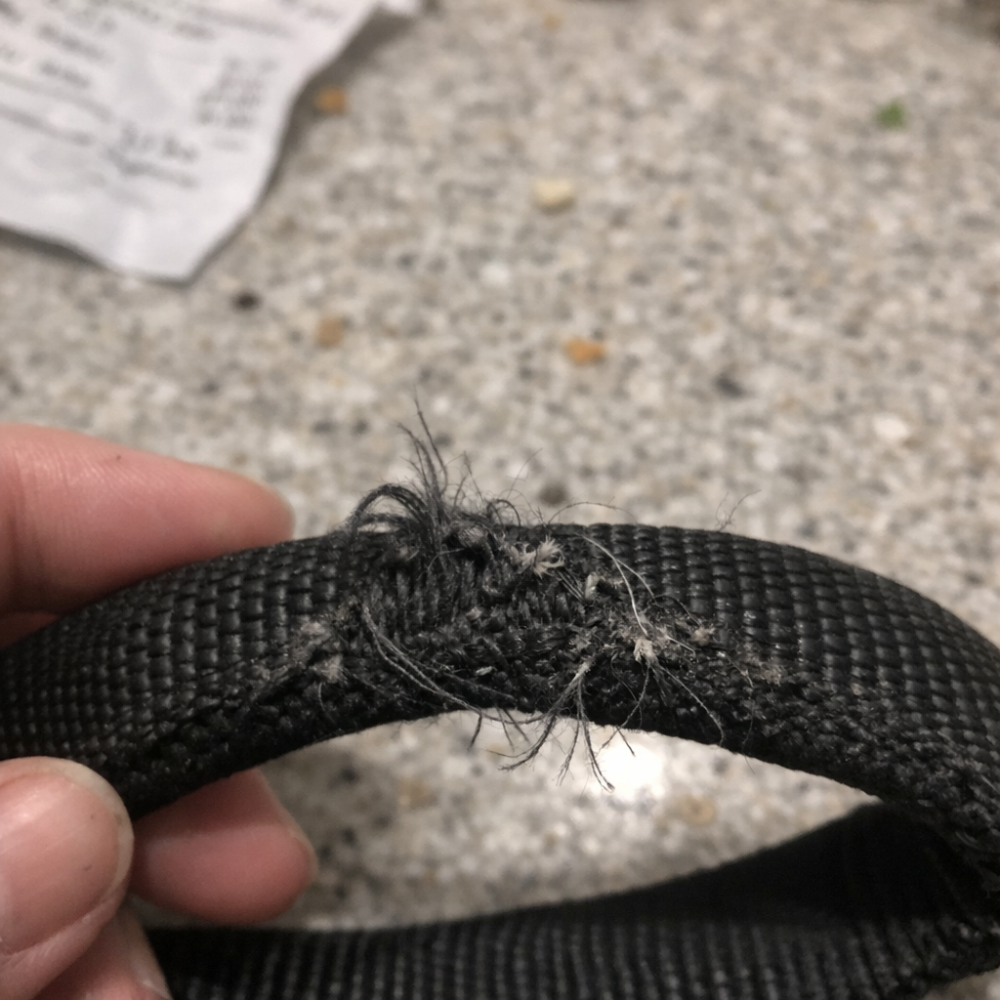
learn.greenvalleynutrition.com
5 reasons exercise won't fix your dog's anxiety
Nobody who gave you that advice ever measured what happens after.
👍❤️😮
156
Ad 24
G
GVN ✓
Sponsored · 🌐
···
You can't outrun a chemical imbalance.
You've tried.
More miles. Longer walks. Extra fetch sessions until your arm gave out.
You kept adding distance because somewhere in your head there was a threshold. A number of miles that would finally outpace the panic.
There isn't one.
Because the panic isn't an energy problem.
It's a chemistry problem.
Researchers measured cortisol in dogs after two-hour walks.
It hadn't budged.
The stress hormone. The chemical that screams "danger" to every cell. Still elevated.
The legs were tired.
The brain didn't notice.
Here's the trade-off you thought you were making:
More effort = less anxiety.
But that equation doesn't exist.
Physical fatigue and nervous system regulation run on completely different tracks.
One measures how tired the body is.
The other measures whether the alarm ever got the signal to turn off.
They're not connected.
Your dog collapses after the walk. An hour later, the pacing starts.
The body recovered faster than you expected.
The alarm never turned off in the first place.
You can't run the anxiety out of your dog any more than you can run a fever out of yourself.
It's chemistry.
Not effort.
The deal you thought you were making doesn't exist.
5 reasons exercise won't fix your dog's anxiety: learn.greenvalleynutrition.com
See more
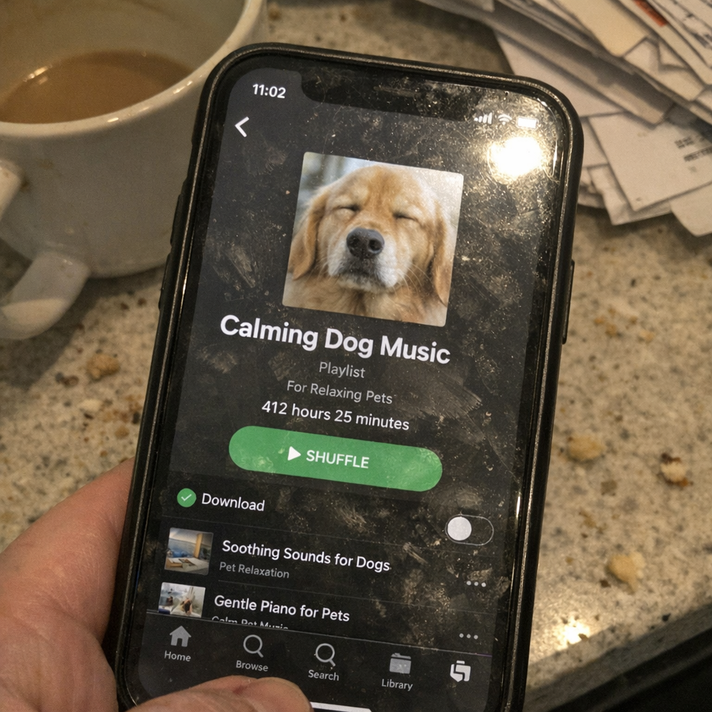
learn.greenvalleynutrition.com
5 reasons exercise won't fix your dog's anxiety
Your dog's legs can't outrun their brain chemistry.
👍❤️
203
Ad 25
G
GVN ✓
Sponsored · 🌐
···
If exercise fixed dog anxiety, yours would be calm by now.
Think about the miles you've logged.
The mornings before work. The evenings after. The weekends spent at the park throwing balls until your shoulder screamed.
You've put in the effort.
More than most dog owners ever will.
If exercise was the answer, you'd have proof by now.
But the pacing continues. The whining when you leave. The same spiral, day after day.
Here's what that tells you:
You've been mopping while the pipes leak.
Water pools on the floor. You mop. An hour later, wet again.
So you mop harder. Faster. More often.
You buy a better mop. You wake up earlier to mop.
And the floor is still wet.
Because there's a leak in the pipes.
You could mop for the rest of your life and never fix it.
Exercise is the mop.
Your dog's nervous system is the leak.
The mop isn't broken. You're not using it wrong.
It just wasn't designed for this job.
The data is in.
You've run the experiment a hundred times.
Same input. Same result.
Your effort was never the problem.
The tool was.
How much more evidence do you need before you stop mopping?
5 reasons exercise won't fix your dog's anxiety: learn.greenvalleynutrition.com
See more
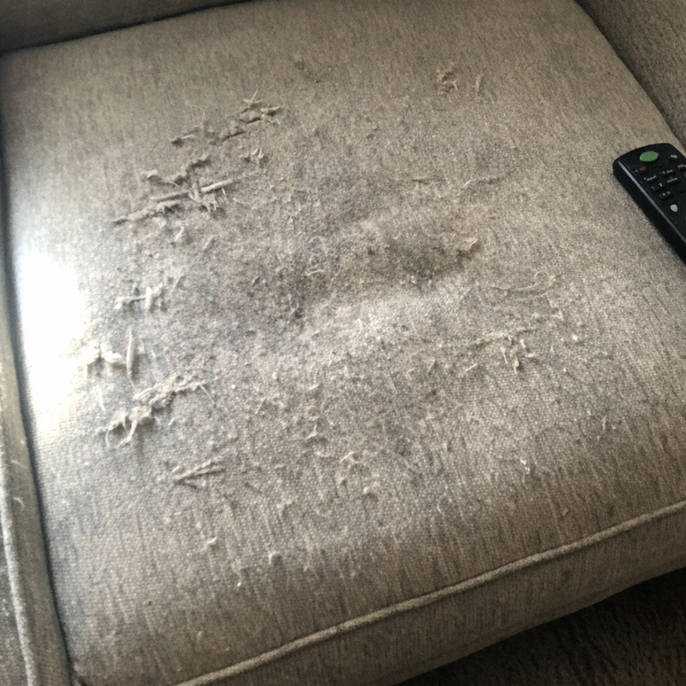
learn.greenvalleynutrition.com
5 reasons exercise won't fix your dog's anxiety
You've already proven it doesn't work. How many more miles?
👍❤️
178
Ad 26
G
GVN ✓
Sponsored · 🌐
···
Anxiety isn't excess energy. It's a depleted reset mechanism.
You've been treating it like the tank is too full.
Too much energy. Gotta burn it off. Gotta drain it down.
But the tank was never full.
The tank is empty.
Think about what's actually happening inside your dog.
There's a smoke alarm in every mammal's brain. It fires when danger appears.
When the danger passes, something is supposed to reset it. Turn off the screaming. Signal that it's safe.
In your dog, that signal isn't coming.
The reset mechanism is starving.
Not broken. Not defective.
Starving.
Every mammal has this system. Wolves have it. The calm dog at the park has it. Your dog has the same machinery.
Just nothing in the tank.
The alarm fires. The danger passes. The alarm keeps screaming.
Because the thing that was supposed to turn it off is running on empty.
And no amount of exercise fills that tank.
Running doesn't feed a reset mechanism.
Fetch doesn't feed a reset mechanism.
Miles don't feed a reset mechanism.
You can exhaust your dog completely.
The reset mechanism won't notice.
It's starving for something exercise can't provide.
You've been treating depletion like excess.
That's why nothing has worked.
5 reasons exercise won't fix your dog's anxiety: learn.greenvalleynutrition.com
See more
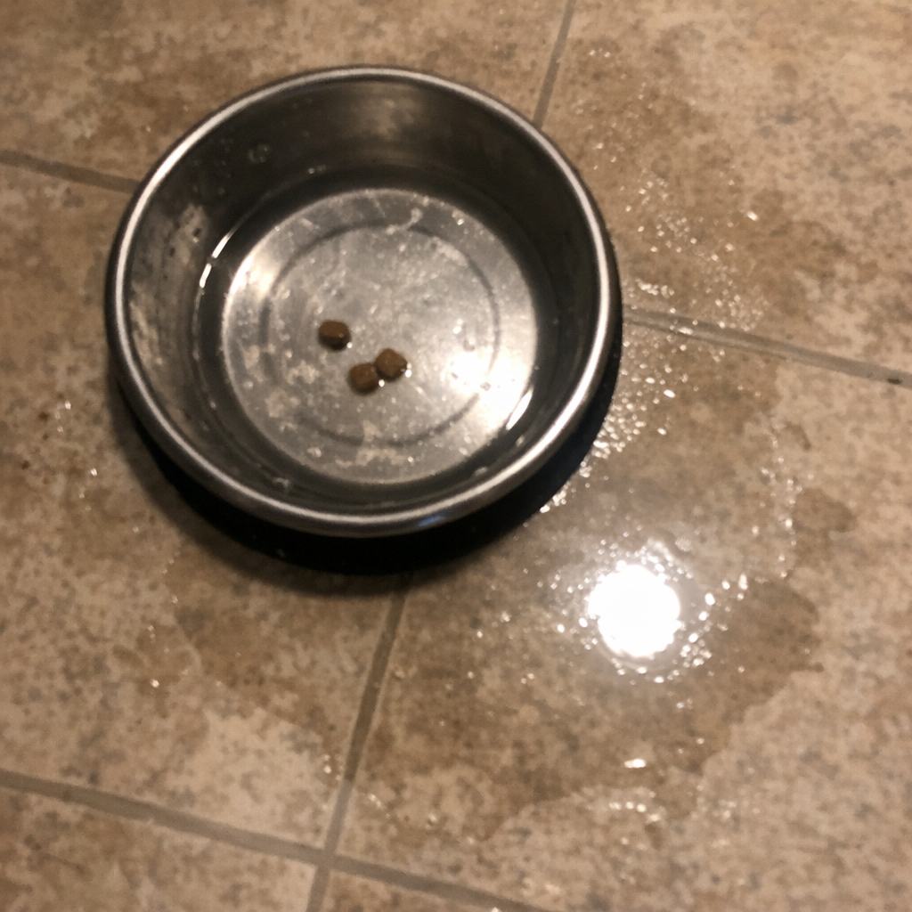
learn.greenvalleynutrition.com
5 reasons exercise won't fix your dog's anxiety
Anxiety isn't energy looking for an exit. It's a system running on empty.
👍❤️😮
234
Ad 27
G
GVN ✓
Sponsored · 🌐
···
The guilt you feel isn't proof you're a bad owner. It's proof you were handed the wrong tool.
Late at night, after another walk that didn't help, the voice starts.
You're not doing enough. You're not walking far enough. You're not trying hard enough.
Other people's dogs seem fine. Why isn't yours?
You start wondering if you're the problem.
Here's what you need to hear:
The guilt is a symptom. Not of your failure. Of bad advice.
"A tired dog is a calm dog" came from the 1970s.
Before anyone measured stress hormones in dogs. Before brain scans. Before anyone understood the difference between hyper and terrified.
Same era as shock collars. Same era as dominance theory.
Trainers back then thought exhaustion was discipline.
They had no way to measure what was happening inside a panicking brain.
And their guess became the advice that was handed down to you.
The guilt you feel is real.
But it's attached to the wrong cause.
You didn't fail your dog.
The advice failed you.
It was made for excess energy. Your dog has something else.
The tool wasn't designed for this job.
And nobody told you that.
So you blamed yourself for the tool not working.
That's not your failure.
That's a system that gave you bad information and let you feel guilty about the results.
5 reasons exercise won't fix your dog's anxiety: learn.greenvalleynutrition.com
See more
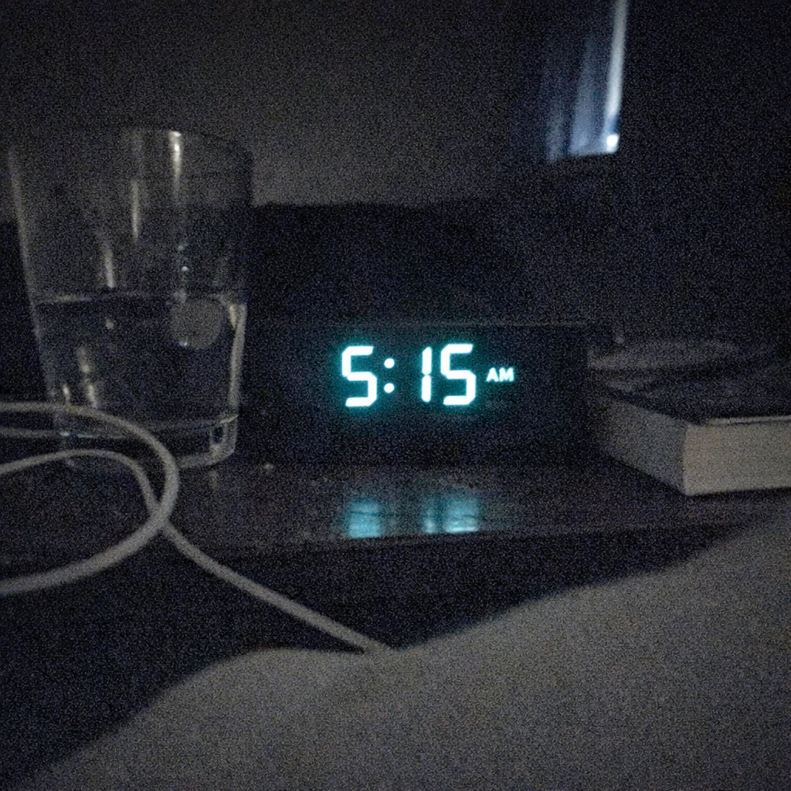
learn.greenvalleynutrition.com
5 reasons exercise won't fix your dog's anxiety
The guilt isn't proof you failed. It's proof the advice was wrong.
👍❤️
312
Ad 28
G
GVN ✓
Sponsored · 🌐
···
Your dog isn't defective. Their reset mechanism just needs fuel.
You've probably wondered if something is just wrong with them.
Other dogs lie down. Other dogs seem fine. Other dogs don't pace in circles for hours after a doorbell rings.
What's wrong with yours?
Nothing.
The machinery works exactly as designed.
Watch what happens in the wild.
Wolves rest up to sixteen hours a day. Coyotes lounge in the sun. Wild canids don't run marathons to stay calm.
They don't need to.
Because their reset mechanism has what it needs.
The alarm fires. Danger appears. Adrenaline floods the system.
Then the danger passes.
And the body sends a signal to stand down. The alarm resets. They go back to lying around doing nothing.
Your dog has the same system.
The same hardware. The same design.
But the reset signal isn't coming.
Not because the system is broken.
Because the system is starving.
Every mammal has this mechanism. The calm dog at the park has it. The wild canids have it.
Your dog has it too.
It's just running on empty.
The pacing isn't a defect.
It's a signal that something is missing.
The reset mechanism is waiting for fuel it hasn't received.
5 reasons exercise won't fix your dog's anxiety: learn.greenvalleynutrition.com
See more
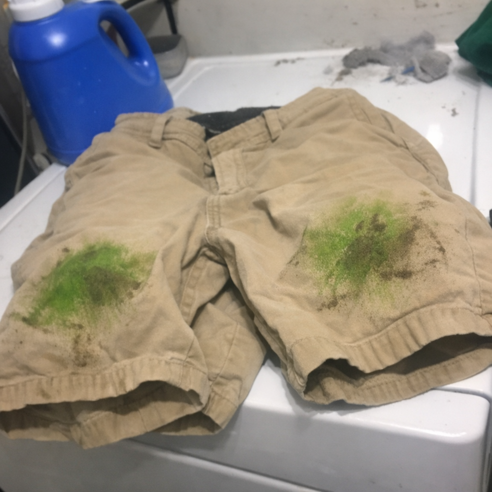
learn.greenvalleynutrition.com
5 reasons exercise won't fix your dog's anxiety
The reset button works. It just needs fuel.
👍❤️
267
Ad 29
G
GVN ✓
Sponsored · 🌐
···
The anxiety isn't who they are. It's what happens when the system runs empty.
At some point, you probably started thinking this is just your dog's personality.
They're anxious. They've always been anxious. This is who they are.
But that's not what you're seeing.
You're seeing a system running on fumes.
Every mammal has a built-in mechanism for calming down after stress.
The alarm fires. Danger passes. The body sends a signal to reset.
In your dog, that signal isn't coming.
Not because they're wired differently.
Because the thing that's supposed to send the signal is starving.
Think of a smoke detector that won't stop screaming.
The toast is gone. The smoke cleared hours ago. But the alarm keeps going.
Nothing is wrong with the alarm itself.
The reset mechanism is depleted.
Your dog wasn't born anxious.
They weren't born a pacer or a whiner or a dog who can't settle.
The system that was supposed to keep them calm ran out of what it needs.
And without that fuel, the alarm stays on.
The pacing continues. The panting continues. The spiral repeats.
What looks like personality is actually depletion.
What looks like "who they are" is actually what happens when the tank runs empty.
They're not anxious dogs.
They're dogs whose reset mechanism needs something it isn't getting.
5 reasons exercise won't fix your dog's anxiety: learn.greenvalleynutrition.com
See more
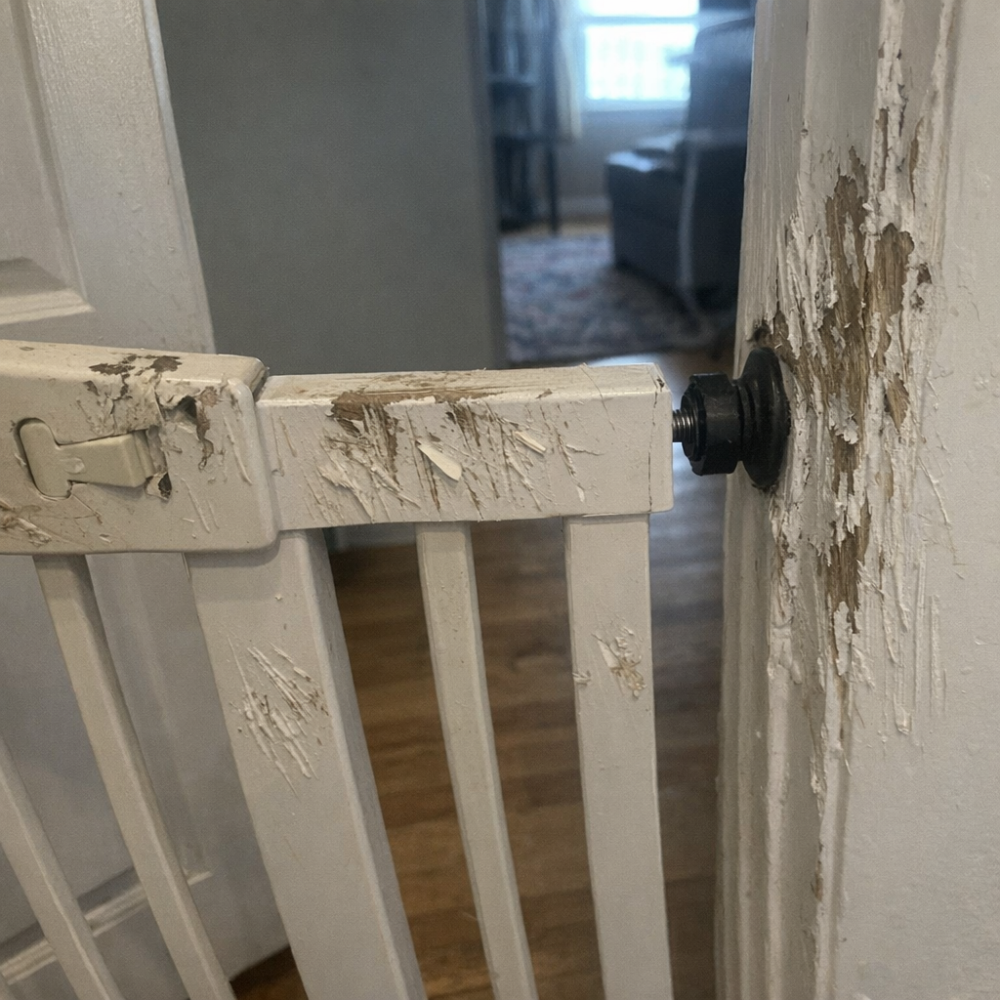
learn.greenvalleynutrition.com
5 reasons exercise won't fix your dog's anxiety
This isn't who they are. It's what happens when the tank runs dry.
👍❤️😮
289
Ad 30
G
GVN ✓
Sponsored · 🌐
···
That instinct that told you "this isn't working" was correct.
You've had that thought before.
After another walk that didn't help. After another fetch session that ended the same way. After watching the pattern repeat so many times you lost count.
Something isn't right. This should be working by now.
And everyone told you to keep going. Try harder. Walk farther. Be more consistent.
So you pushed down the instinct and added more miles.
But the voice was right.
Look at what you've actually seen:
You walk your dog. They collapse. An hour later, the pacing starts again.
You throw the ball until your arm aches. The anxiety doesn't budge.
You've run the same experiment over and over.
Same input. Same result.
Exhausted dog. Still anxious.
That's not failure.
That's data.
You've been mopping while the pipes leak.
And somewhere inside, you knew the floor was never going to stay dry.
The instinct wasn't wrong.
The advice was.
Exercise drains physical energy. It doesn't touch the nervous system stuck in alarm mode.
They're two separate systems.
And you noticed they weren't connected before anyone explained why.
You weren't doing it wrong.
The approach was wrong.
And the instinct that told you so was correct.
5 reasons exercise won't fix your dog's anxiety: learn.greenvalleynutrition.com
See more
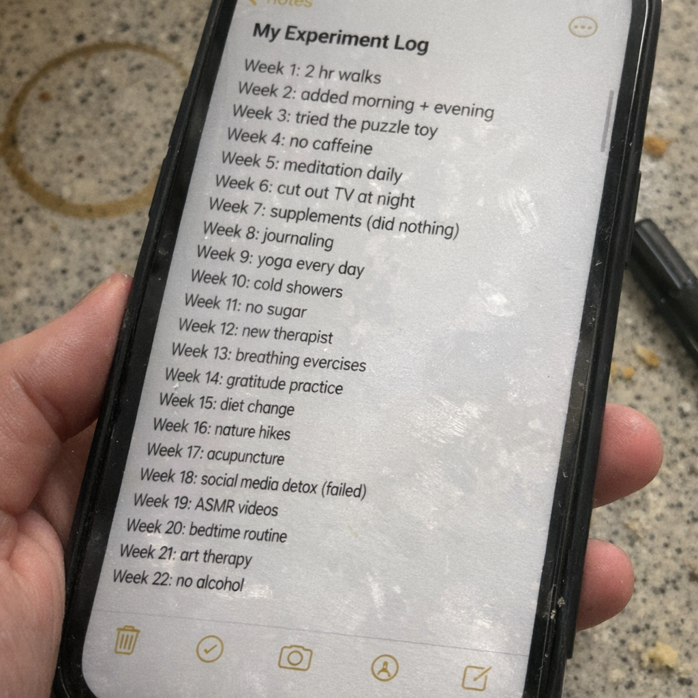
learn.greenvalleynutrition.com
5 reasons exercise won't fix your dog's anxiety
Your gut knew. Now the research confirms it.
👍❤️
198
Ad 31
G
GVN ✓
Sponsored · 🌐
···
Physical fatigue and nervous system regulation run on completely different tracks.
One measures how tired the body is.
The other measures whether the alarm ever got the signal to turn off.
They're not connected.
You can drain the first one to zero.
The second one won't notice.
Researchers proved this.
They measured cortisol after two-hour walks.
The stress hormone. The chemical that tells every cell to stay on high alert.
Still elevated. After hours of exercise.
The dogs were exhausted.
The anxiety was untouched.
Here's what that means for your dog:
The collapse after the walk isn't peace.
It's a tired body and a nervous system that's still screaming.
One system ran out of energy.
The other kept firing because it never got the memo that the threat was over.
An hour later, the pacing starts again.
The body recovered faster than you expected.
The alarm never turned off in the first place.
This is why more miles don't help.
This is why longer walks produce the same results.
This is why your dog can be physically exhausted and still vibrating with tension.
Two tracks.
One tracks physical output.
One tracks whether it's safe to calm down.
Exercise only affects the first one.
The second one is still waiting for a different signal.
5 reasons exercise won't fix your dog's anxiety: learn.greenvalleynutrition.com
See more
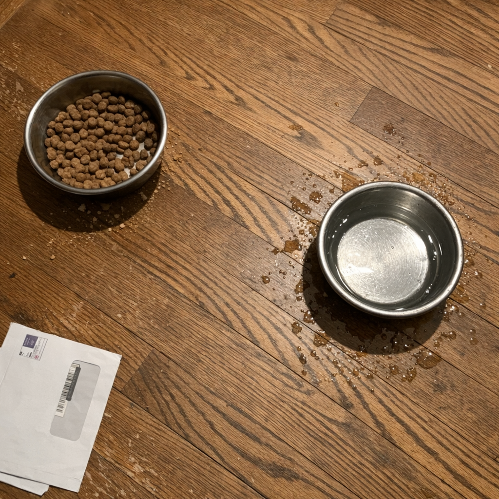
learn.greenvalleynutrition.com
5 reasons exercise won't fix your dog's anxiety
One system burns energy. The other regulates fear. They don't talk.